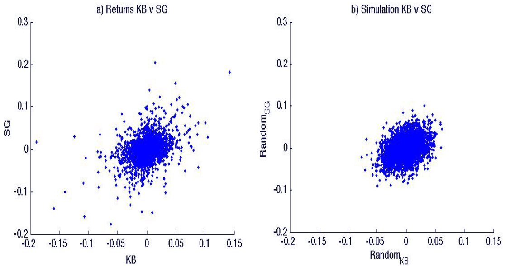
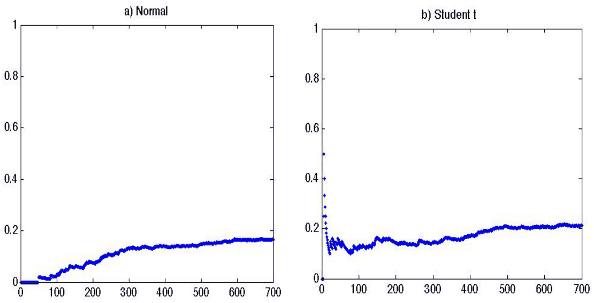
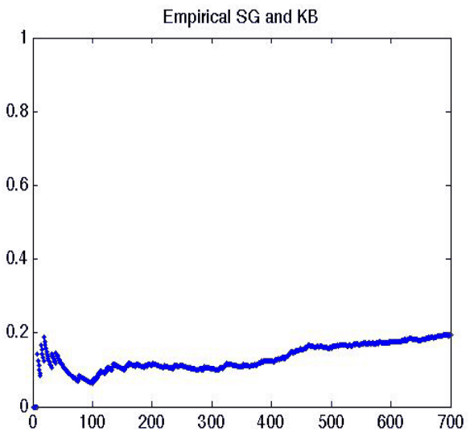

The sources of contagion risk in a banking sector with foreign ownership
Tomas Fiala, Tomas Havranek (2017), "The sources of contagion risk in a banking sector with foreign ownership." Economic Modelling 60: 108-121. https://doi.org/10.1016/j.econmod.2016.08.025. Four typographical errors that the journal's copy-editor caught are corrected here. The appendix tables are the ones the authors wrote, and there are more of them than the journal printed: the published article stops at Table 11, leaving out the subsidiary-to-subsidiary weekly estimates and both crisis-subsample tables, and moving the confidence intervals to the publisher's online supplement. The accepted manuscript they come from is here too; the PDF above is the published article.
Tomas Fialaa,b and Tomas Havranekc,d
aSwiss Finance Institute
bUniversità della Svizzera Italiana, Lugano
cCharles University, Prague
dCzech National Bank
August 30, 2016
*Corresponding author: Tomas Havranek, tomas.havranek@ies-prague.org. We thank Mazen Ali, Lenka Habetinova, Iftekhar Hasan, Roman Horvath, Zuzana Irsova, Marek Rusnak, Boril Sopov, Mitja Stadje, Chen Zhou, and four anonymous referees of Economic Modelling for their helpful comments. We are also grateful to Matej Senkarcin for providing us with a portion of data. Tomas Fiala acknowledges support from the Grant Agency of Charles University (grant #334315/2015) Tomas Havranek acknowledges support from the Czech Science Foundation (grant #P402/12/G097). The views expressed in the paper are ours and not necessarily those of the Czech National Bank.
JEL Classification: F23, F36, G01, G21
Abstract
Foreign-dominated banking sectors, such as those prevalent in Central and Eastern Europe, are susceptible to two major sources of systemic risk: (i) linkages between local banks, and (ii) linkages between a foreign parent bank and its local subsidiary. During and after the global financial crisis, the second source of risk has been stressed by local regulators. Using a nonparametric method based on extreme value theory, we analyze interdependencies in downward risk in the banking sectors of the Czech Republic, Poland, Slovakia, and Turkey during 1994–2013. We find that the risk of contagion from a foreign parent bank to its local subsidiary is substantially smaller than the risk between two local banks.
Keywords: systemic risk, extreme value theory, financial stability, Central and Eastern Europe, banking, parent-subsidiary relationship
1. Introduction
In many emerging markets, especially in Central and Eastern Europe, a significant proportion of banks are owned by foreign multi-bank holdings. Until the global financial crisis of the late 2000s, the high level of foreign presence in the banking sectors of these countries was mostly viewed favorably: foreign owners were thought to reduce the inefficiency of local banks, which had often been state-owned in the past. These expectations were corroborated by researchers examining the drivers of bank efficiency in Central and Eastern Europe, who showed that foreign-owned banks outperformed other local banks (for example, Bonin et al. 2005; Brissimis et al. 2008; Hasan and Marton 2003; Berger et al. 2009).1 Using a sample of ten CEE countries, Dinger (2009) finds stabilizing effect of foreign-owned banks on emerging economies. Deng et al. (2007) highlight the positive effects of geographic diversification. The positive view changed when the financial crisis spread from developed to emerging markets, and regulators started to worry that parent banks would drain liquidity from their local subsidiaries and began to consider foreign ownership as a potential source of risk (see, for instance, CNB 2012; NBP 2011).
In contrast to the change in the perception of foreign ownership of local banks, the research literature traditionally focuses on the positive effects of the ownership of local banks by multi-bank holdings. For example, Ashcraft (2004) argues that banks affiliated with multi-bank holdings are safer than stand-alone banks, because the affiliated banks can receive capital injections in bad times and are thus able to recover more quickly. De Haas and Van Lelyveld (2010) suggest that foreign ownership of banks can have counter-cyclical effects, since affiliates of foreign banks do not have to reduce credit supply in times of financial crisis idiosyncratic to the domestic economy. Goldberg et al. (2000) conclude that foreign ownership of banks in Argentina and Mexico contributed to greater stability of the financial system during crises in emerging markets.
In this paper we focus on the threat of contagion from foreign owners to local banks in Central and Eastern Europe (the Czech Republic, Poland, Slovakia, and Turkey).2 Our goal is to compare these risks with those stemming from systemic interdependencies among individual banks in the local market. We investigate these issues using stock market data and the methodology of Slijkerman et al. (2013), which we adjust so that it can be employed to examine the relationship between a foreign parent bank and a domestic subsidiary or the relationship between banks in the domestic market. This non-parametric method builds on extreme value theory and accounts for fat-tailed distributed shocks, which are a characteristic feature of financial markets.
We find that the threat of contagion between local banks and their foreign owners is much weaker than the risk between the local banks themselves. The estimated probability that a local bank fails after a failure of another bank in the local market is 10%, while the probability of default of a bank is only 5% if the bank's foreign owner crashes. Therefore, our results suggest that foreign ownership does not substantially add to systemic risk in the local banking sector.
The contribution of our analysis in comparison with previous research is threefold. First, our paper is the first to focus on the relationship between foreign parent banks and their local subsidiaries and compare the risks of contagion from ailing parents to healthy daughters with the relationships between individual banks in the local market. Second, few studies have analyzed systemic risk in Central and Eastern Europe (the rare examples include, for instance, Arvai et al. 2009; Cihak et al. 2007). Third, we employ modern techniques well-suited to the examination of interdependencies in downside risk between banks (Slijkerman et al. 2013).
Our results also point to much weaker co-movement of extreme losses in stock prices between a local bank and its foreign owner than between local banks. This finding seems to contrast with a relatively large literature on stock market comovements in Central and Eastern Europe. For example, Horvath and Petrovski (2013) conclude that stock markets in the Czech Republic, Hungary, and Poland are heavily correlated with those in Western Europe. Gjika and Horvath (2013) report a high level of market integration between the Czech Republic, Hungary, and Poland and the euro area. The analysis of Syllignakis and Kouretas (2011) shows similar results. Our findings are different because we use a more flexible, non-parametric method that focuses on large outlying shocks in financial markets. This method captures extreme dependence and allows for heavy tails. Thus, we measure effects the previous studies did not capture.
The remainder of the paper is organized as follows: Section 2 discusses related literature, Section 3 provides the economic rationale of our analysis, Section 4 explains the model based on extreme value theory, Section 5 describes estimation methods and data, and Section 6 discusses the results. Section 7 concludes the paper. Appendix A shows the acronyms of the bank names used in the paper, Appendix B provides additional simulation results, Appendix C contains several robustness checks, and Appendix D provides confidence intervals around our central estimates.
2. Related Literature
In this section we present an overview of the recent literature on systemic risk. Our paper is unique in three aspects. First, due to its focus on the relationship between a domestic subsidiary and its foreign parent; second, due to its focus on Central and Eastern European countries; and third, due to its techniques that examine tail dependence in returns.
The existing literature acknowledges the positive effects of the relationship between a parent bank and its local subsidiary. Based on US data, Ashcraft (2004) finds that banks affiliated with a multi-bank holding company tend to be substantially safer than either stand-alone banks or banks owned by a one-bank holding company, because affiliated banks can be expected to receive capital injections when needed and thus recover more quickly from negative shocks than other banks. Using simulation techniques, Klein and Saidenberg (1997) conclude that diversification within the holding-company structure enables higher efficiency, i.e., holding less capital and doing more lending compared with the benchmark. Deng et al. (2007) highlight the positive effects of geographic diversification of deposits and diversification of assets. De Haas and Van Lelyveld (2010) find positive effects of a strong parent on the expansion of subsidiaries. Moreover, due to the support of the parent bank, foreign bank subsidiaries also do not need to limit credit supply during periods of financial crises, in contrast to domestic banks, which suggests counter-cyclical effects on the domestic economy. Nevertheless, these authors do not discuss what happens if the parent bank is affected by a negative shock.
The potential downsides are less pronounced in the literature. Only Keeton (1990) discusses three situations which result in adverse effects. First, the parent may decide to let its subsidiary fail if the expected earnings are lower than the cost of saving the bank. Second, the parent company may transfer the resources from a troubled subsidiary in mispriced transactions. Third, a low capitalized parent may force its healthy subsidiaries to take big risks in order to earn enough to pay for the parent's debt. Nevertheless, Keeton's paper is based on the US reality in the 1980s, which is remote from the situation in the Central and Eastern European countries at the current juncture.
Regarding the effects of foreign ownership, the results reported in the literature are mostly positive. Goldberg et al. (2000) conclude that foreign ownership of banks in Argentina and Mexico had contributed to a greater stability during a crisis. On the other hand, Lensink et al. (2008) find that foreign ownership negatively affects bank efficiency. Nevertheless, they agree that inefficiency is reduced in the presence of sound institutions. Specifically in the case of CEE, Bonin et al. (2005) conclude that majority foreign ownership leads to higher operating efficiency. Using a sample of ten CEE countries, Dinger (2009) finds a stabilizing effect of foreign-owned banks on emerging economies. Brissimis et al. (2008) ascertain significantly positive effects of foreign ownership on the productive efficiency of banks in the so-called new EU member states. Focusing only on Hungary, Hasan and Marton (2003) show that foreign banks and banks with higher foreign bank ownership involvement tend to be associated with lower inefficiency. Examining data from Hungary, Ábel and Siklos (2004) argue that the policy of searching for foreign strategic partners to take over existing domestic banks has created a stable and well-functioning banking sector. Thus, it seems that foreign bank ownership yields positive effects on efficiency at least in the CEE countries, which are relevant for this study.
There exist only a few studies that focus on the systemic risk of banks in the CEE. Nevertheless, the existing studies are conceptually different from our study. The closest paper is that of Arvai et al. (2009), who, employing BIS country-level data, study the exposures between Western European and Central, Eastern & South-Eastern European (CESE) countries. They conclude that the financial interlinkages with Europe are economically significant and that most CESE countries are dependent on banks in Austria, Germany, and Italy, stating that the exposures are quite concentrated. The exposure in the opposite direction is said to be much smaller. Focusing only on the Czech Republic, Cihak et al. (2007) conclude that the Czech banking sector is relatively resilient to the aforementioned shocks. These results suggests there is a downside from a high exposure to Western Europe, although some countries may show more resiliency than others.
A comparatively larger literature is devoted to stock market comovements. Focusing only on stock indices of banks in the Czech Republic, Hungary, and Poland, Jokipii and Lucey (2007) find a presence of considerable comovement. Examining the whole stock markets, Horvath and Petrovski (2013) conclude that stock markets in the Czech Republic, Hungary, and Poland are heavily correlated with those in Western Europe. In another study, Gjika and Horvath (2013) find a high level of market integration between the three countries and the euro area. The analysis of Syllignakis and Kouretas (2011), which also involves Slovakia, shows similar results. Should the comovements exist also in the tails of return distributions of banks, in terms of our technique, it would hint at a higher level of systemic risk.
Focusing more on the methodological aspect,3 it is worth noting the paper by Chollete et al. (2012), who employ both the correlation and the tail dependence measure, which is similar to ours, to data from G5 countries, east Asia, and Latin America. They find that correlations and extreme dependence deliver different risk management signals. Thus, the authors conclude that the finding of correlation complexity and potential heavy tails supports the reasons for using robust dependence measures in risk management, which is what we attempt to do in this paper. The authors also find that regions show contagion risk at various times and downside dependence is also always largest for the region with largest returns.
Furthermore, examining data from the US and Western Europe, Rodríguez-Moreno and Peña (2012) conclude that the CDS-based measures are superior to measures based on stock market prices. Important contribution are the models of Lehar (2005) and the ΔCoVaR model of Adrian and Brunnermeier (2008). Nevertheless, these two models substantially differ from the technique we use in this paper. Lehar's model is based on option pricing. ΔCoVaR, on the other hand, measures the contribution of an individual institution to the overall systemic risk, whereas our technique does not condition on the fall of a specific institution, i.e., ours captures the overall fragility. Moreover, ΔCoVaR suffers from disadvantages inherent to VaR models, see, for example, Kuester et al. (2006) or Daníelsson (2002). Girardi and Tolga Ergün (2013) use Multivariate GARCH to estimate modified CoVaR. Employing the US data, they find that "depository institutions were the largest contributors to systemic risk, followed by broker-dealers, insurance companies, and non-depository institutions" and that "[s]ystemic risk of all industry groups increased substantially prior to the crisis."
Moreover, there is a vast literature that uses correlation to capture the dependence between banks for other regions than CEE. Patro et al. (2013) use stock return correlations among financial institutions as an indicator of systemic risk. On a sample of twenty two largest bank holding companies and investment banks in the US they find a growing trend in stock return correlation among banks, which leads them to conclude that the systemic risk in the banking system has increased. Similarly, Huang et al. (2012) examine twenty two major banks in Asia and the Pacific using a method hinging on correlation, and Puzanova and Düllmann (2013), who study a panel of several dozen of the world's major commercial banks. These studies do not contain any CEE bank.
More generally speaking, there is a large literature on international contagion in financial markets, especially focusing on sovereign bond yield. For example, Gomez-Puig and Sosvilla-Rivero (2016) examine the transmission of the European sovereign debt crisis and distinguish between pure and fundamental contagion. Silvapulle et al. (2016) use copula methods to investigate bivariate distributions of bond yields in the countries on the EU periphery and find that Ireland, Greece, and Portugal acted as exporters of contagion after the outburst of the crisis. Hemche et al. (2016) use the DCC-multivariate GARCH to examine contagion between developed and emerging economies during the subprime crisis and find that market comovements increased after the crisis. Akhtaruzzaman and Shamsuddin (2016) focus on contagion effects between financial and non-financial firms across 49 countries and find that non-financial firms drive the transmission of shocks.
3. Economic Background
In this section we elaborate on the economic relationships motivating our paper. To be specific, we examine the linkages through which a systemic breakdown can spread. In the first subsection we describe how systemic risk stems from the mutual similarity of banks' balance sheets. In the second subsection we explain how systemic failures can spread from a parent bank to its subsidiaries. These relationships are then captured by the (joint) stock returns.4
3.1. Subsidiary-to-subsidiary linkages
The linkages between subsidiaries can be explained by the mutual similarity of banks' balance sheets. As noted by de Vries (2005) and Slijkerman et al. (2013), among others, banks' balance sheets contain similar entries on both sides. The similarity creates potential for a systemic breakdown, since banks face comparable risks. The asset side of the balance sheets contains a wide range of similar products or direct linkages. For example, mortgages and credit card debt are subject to the same type of risk, as default rates are driven to a large extent by macroeconomic conditions. Direct linkages include large corporate loans or government bonds. Large corporate loans tend to be syndicated; therefore, a default by a large corporate customer or by a sovereign would lead to a joint shock.
The liability sides of banks' balance sheets resemble each other even more. Banks in Central and Eastern European countries are financed mostly by deposits. Thus, they rely heavily on people's trust in the banking sector; any abrupt disruption of this trust could lead to a systemic breakdown.5 Interest rates serve as another major risk driver (for an analysis of the transmission of monetary policy rates to client rates in a low interest-rate environment, see Havranek et al. 2016). Apart from these linkages, banks are also involved in mutual deals on the interbank market. These interactions enter the relevant balance sheets two times, since an asset of one bank is a liability to the other, and vice versa. The interbank market therefore creates direct exposures between banks. (It is worth noting, however, that this linkage is not valid for over-liquid banking systems, where the role of the interbank market becomes limited.)
Apart from balance sheet linkages, the subsidiaries are exposed to the same country specific risks stemming, e.g., from the same regulatory or fiscal policy. We elaborate more on the country specific risks in section 4.2.
3.2. Parent-to-subsidiary linkages
We derive the dependence between a parent bank and its subsidiary from the mutual interconnectedness of their balance sheets, which in turn usually stems from the parent bank's ownership rights. Nevertheless, these rights are limited by regulators, who impose restrictions to protect financial stability. We approach the issue from the perspective of a subsidiary.
On the asset side the subsidiary is linked to its parent by both direct and indirect exposures. The direct exposures result from mutual operations (e.g., loans) provided by the subsidiary to its parent. The direct exposure is limited by the central bank or another regulatory body. The indirect exposure is a result of common risk factors in the economy (e.g., recession in the EU).
We illustrate the extent of direct exposure on the asset side on the Czech sector. Over the three years prior to 2012 the exposure of the five largest Czech banks to their parent companies was about 60% of their regulatory capital (according to the Basel II definition). In response, the Czech National Bank took steps that imply a decrease in the gross exposure limit from 100% of regulatory capital to 50% (CNB 2012).6
Indirect exposures originate in the similarities of bank portfolios; that is, the argument from the previous subsection applies in the relation between foreign owners and local banks as well. Even though the geographical area is different, banks still hold similar assets, such as mortgages.7 Another example concerns Greek government bonds, which were held by banks across Europe; only the particular extent of involvement differed.
Further interconnections stem from the liability side of the balance sheet. Most importantly, parent banks hold a controlling share in the equity of subsidiaries, which enables them to pay themselves dividends when they need to increase their own capital. On the other hand, subsidiaries have to comply with regulatory requirements such as the Basel Accords as well as local laws and decrees which guard local financial stability.
As in the case of two subsidiaries, parents and subsidiaries are linked together indirectly via deposits in a similar way to that discussed above,8 and also directly via interbank markets. Concerning interbank markets, some parent banks provide their subsidiaries with loans that are redeemable at short notice. These loans provided by subsidiary give parents quick access to liquidity, but at the same time they pose a long-term liquidity threat for the subsidiaries.
It is important to note that the statistical technique which we use in the paper does not allow us to explicitly identify the direction of contagion: what we get is an estimate of the probability of contagion between a local subsidiary and its foreign parent. We argue, however, that the interpretation we employ (focusing on foreign parent as the source of potential contagion between the parent and subsidiary) is intuitive given the economic background outlined in this subsection. Moreover, the typical local subsidiary in our sample is much smaller than the corresponding parent bank: accounting for only about 7% of the parent's assets on average for the data period that we use. While local subsidiaries are relatively more profitable in relation to assets (accounting for 21% of the parent's net income on average), the effects of downturns in the business of subsidiaries and parents on their counterparts are unlikely to be symmetrical. The most appealing candidate for an exception is the Czech bank Ceska Sporitelna, which is owned by Erste Group and accounts for 16% of Erste Group's assets and 50% of its net income.
4. Modeling Systemic Risk
The modeling of systemic risk is concerned with extreme shocks that endanger the whole banking sector. This risk, however, originates at the level of individual institutions usually linked via the interbank deposit market, mutual equity holdings, and other linkages to be found in their portfolio holdings, such as syndicated loans (de Vries 2005). A systemic event in a narrow sense then happens when the release of 'bad news' about a financial institution leads to considerable adverse effects on other financial institutions, for example, to one or more crashes (de Bandt and Hartmann 2000).
Therefore, researchers usually work with data on individual institutions and the dependencies among them if they want to gain information on the possibility of a systemic breakdown. Conclusions are subsequently drawn based on these two pieces of information. Such analysis is mostly conducted using methods based on correlation—for example, Lehar (2005) and Acharya (2009)—which is closely associated with the normal distribution.
As argued by Hartmann et al. (2004), crash correlation can be zero even if there is a high spillover probability. This problem stems from the close link between correlation and the assumption of normal distribution of returns. Under the normal distribution assumption, the correlation captures all the dependence between the variables. Generally, however, this is not true for the other distributions and only in the case of a multivariate normal distribution is it permissible to interpret zero correlation as implying independence (Embrechts et al. 2002).
Nevertheless, quite an extensive literature exists suggesting that asset returns are characterized by distributions with heavier tails than normal; see, for example, Cont (2001) and Ibragimov et al. (2011). We illustrate this fact in Figure 1a, where we plot the asset returns of Komercni banka (KB), one of the largest Czech banks, and its parent bank Societe Generale (SG). The returns stem from a time series beginning on July 12, 2001, when KB was sold to SG, and ending on March 8, 2013, when the data was acquired, which gives us 2,921 observations. In Figure 1b we present a simulation consisting of the same number of realizations drawn from a multivariate normal distribution using the means, variances, and correlation as estimated from the empirical data.

It is apparent that the simulation based on the normal distribution does not exhibit nearly as many extreme observations as the actual data do (we also test all return series using the adjusted test and reject the hypothesis of normality at 1% level). The most extreme losses in the simulation reach barely 10% in absolute value. In contrast, extremes as large as 20% are observed in the data, meaning that the normal distribution unambiguously underestimates the day-to-day risks in reality. Note also that there is a pattern in the returns between the firms. The returns are elongated along the axes of the first and third quadrant; that is, the returns of KB and SG seem to be moving in tandem. This suggests that there is dependence between the two.
Finally, we note that we are primarily interested in the dependence between downside risks, following Slijkerman et al. (2013). Correlation tries to capture the overall dependence, and the large number of observations around the center overweight the extreme ones. Nevertheless, in order to analyze systemic risk we need to focus on contemporaneous extreme losses. An appropriate measure is introduced in the following subsection.
4.1. Dependence beyond correlation
As discussed above, the techniques based on the normal distribution and the correlation measure impose severe limitations on the modeling of dependencies. Since risk management is concerned with modeling downside extreme movements, we need a measure that is able to cope with distributions that exhibit heavier tails than the normal distribution. This requirement also makes it impossible to employ correlation, which is closely linked to the normal distribution and does not necessarily capture the dependence between random variables in tails.
For these reasons we use the measure developed by Huang (1992), which satisfies the stated requirements. It is a conditional expected value that can be interpreted as the expected number of bank failures in the whole economy given that one bank is already bankrupt. Suppose for simplicity that we are dealing with a two-bank economy. The measure is then given by
where stands for the number of simultaneous crashes; random variables and represent negative stock returns, and denotes a common bankruptcy threshold.9
The measure was first applied by Hartmann et al. (2004) to examine linkages between stock and bond markets and has gained in popularity ever since. For example, de Vries (2005) shows how the dependence is linked to the shape of the underlying distribution. Similarly, Geluk et al. (2007) study the joint loss behavior of correlated bank portfolios. Zhou (2010) uses the measure to show that economic size should not be considered as a proxy of systemic importance. Hartmann et al. (2010) then use it to study dependencies between exchange rates and uncover a higher joint connection of Western currencies to the dollar compared to other currencies. Finally, Slijkerman et al. (2005) and Slijkerman et al. (2013) employ the measure to study the interdependence between the insurance and banking sectors.
The measure is popular because of its favorable properties. First, it is not associated with any type of distribution, which allows us to account for fat-tail returns. Second, the measure can allow for non-linear relationships (Hartmann et al. 2004). Therefore, it can describe the dependency that correlation cannot capture. Third, the measure can easily be extended into a higher dimension if desirable. hence, it can measure dependence among more than two random variables. Fourth, as noted by de Vries (2005), researchers do not need to condition the estimation on a specific bank failure.10 Finally, in a two-dimensional setting the measure minus one can be interpreted as the conditional probability of a systemic crisis, because it is equal to the probability that two banks crash given that one is already bankrupt.
Due to this flexibility we employ the measure in our analysis.
Following Slijkerman et al. (2013), we define the systemic risk measure as the limit of the expected value in equation (1)
4.2. Statistical model
This section builds on the approach developed by Slijkerman et al. (2005; 2013) for modeling linkages between European banks and insurance companies. Nevertheless, we reshape their approach so that it can be used to model the relationship between a foreign parent and a domestic subsidiary or the subsidiary-to-subsidiary relationship.
We assume that the banking sector is subject to the three following risk components. Banks face the global (macro) risk , the risk related to an individual country—here, we differentiate between home and foreign country risk, and the bank-specific risk . Finally, we also use the assumption that the risk components follow the Pareto distribution, which is a relatively weak assumption, since the distribution of returns seems to follow a power-law or Pareto-like tail (Cont 2001).
Definition 4.1. Let . Let be a random variable defined on some probability space . We say that follows the Pareto distribution if the probability that is greater than a real number is
for and 1 otherwise. The shape parameter is the tail index determining the number of finite moments.
Thus, for a random vector of the above-mentioned risk components and for , we can write
Function is known as the survival function. We refer to the survival function of a Pareto-distributed random variable as the Pareto survival function. We emphasize that in the setup of our approach, where losses are modeled as positive numbers, the survival function needs to be interpreted as the probability that a bank goes bankrupt once the threshold is surpassed.
Finally, we can define the "equity loss returns" (Slijkerman et al. 2013) and for a domestic and foreign bank, respectively. Keeping in mind that both and consist of three different risk components, we can write
where , and where we keep the original assumption of our approach that the weights of the individual components are equal to one.
4.2.1. Subsidiary-to-subsidiary dependence
Under this setting the risk profile of each bank is composed of the same risk components with the exception of the bank-specific factor . Being interested in computing the probability that is greater than , we need to compute the probability that is higher than . To achieve that we need the corollary formulated by Slijkerman et al. (2013) based on Feller's convolution theorem (1971, p. 278).
Corollary 4.1. Suppose that two independent random variables and follow a Pareto distribution with , i.e., they satisfy
Then their convolution satisfies
where is a slowly varying function and .
The corollary implies that for large failure levels , the convolution of and can be approximated by the sum of the marginal distributions of and .
For finite we can therefore write
Note also that would yield the same result.
At this point, we need to determine what the probability of a parallel crash in the domestic banking sector is. This is given by the probability that two domestic subsidiaries crash simultaneously. Thus, for other than the probability of a simultaneous crash is given by
It follows that
Equation (9) already implies that
4.2.2. Parent-to-subsidiary dependence
In particular, we are interested in the relationship between a foreign parent and its domestic subsidiary. This results in a slight difference from the former case discussed above. The risk profile of the domestic subsidiary is still the same . On the other hand, the risk the foreign parent is facing is somewhat different: . Being interested in the joint probability, we get
The reasons for this are very similar to the previous case. The probability mass is concentrated along the axes, but this time there is only one factor (global risk ) that the two banks have in common. Therefore, their joint risk is driven by this component only and the resulting joint probability is equivalent to the probability that is greater than .
4.2.3. Systemic risk
In this subsection we utilize the results we derived in equations (7), (10), and (11) to compute the systemic risk measure from equation (3).
Before proceeding further, we compute the future denominator of the measure. Realizing that
for some random variables and , we can write
for a pair of domestic banks and . By using equations (7), (10), and (13) to compute the systemic measure, we get
This means that in a two-bank economy we expect that on average one and a half banks fail, given that one is bankrupt. In other words, if one bank is already bankrupt then the second one is expected to fail in one out of two cases. In the framework of de Vries (2005) this result implies that the potential for a systemic breakdown is strong, as the linkages do not vanish asymptotically.
Based on equation (12), we derive the denominator for the case of a foreign parent and domestic subsidiary :
Analogously, from equations (7), (11), and (15) we compute the systemic measure for the parent-to-subsidiary dependence
The systemic measure suggests that the dependence between a foreign parent and a domestic subsidiary is lower than that between two domestic subsidiaries. The difference between the two cases stems from the varying country risk component. This effect can be assigned to the diversification possibilities resulting from the multinational structure. Although the systemic risk is somewhat lower, it does not vanish completely. In the perspective of de Vries' system, there still exists strong potential for a systemic breakdown. As in Slijkerman et al. (2013), we estimate the two models in the empirical section and test whether the difference between them is statistically significant.
The weakest point of this methodology is missing guidance on how we should set the extreme value threshold . From this point of view, it is desirable to develop techniques which determine the threshold endogenously. Also, the current statistical model requires that home and foreign risk factors are not identical in the right tail. Finally, future research needs to develop the link to standard banking theory so that the economic processes behind extreme values are well-understood.
5. Estimation and Data
5.1. Estimation
In this subsection we introduce a non-parametric estimator for the linkage measure in equation (1); we use the version presented in Slijkerman et al. (2013). Following their work, we accompany the introduction of the estimator with sensitivity examples based on a simulation as well as on actual data (available in Appendix B). Note also that this version of estimator assumes that losses are modeled as positive numbers.
The estimator of the measure in equation (1) is straightforward. It is sufficient only to count the number of times when and are greater than a threshold . In this setup, and are empirical negative stock returns, the joint co-movements of which approximate systemic risk. The estimator is therefore given as follows
where is to be understood as an indicator function which equals one whenever expression holds and zero otherwise. The th observations, denoted as and , are realizations of random variables and , respectively. The number of observations is given by .
To understand where the minimum and maximum function comes from, one needs to realize that:
Nevertheless, we do not go deeper into the derivation of the estimator, because it is already presented in Slijkerman et al. (2005).
The estimator described above has two favorable features. First, for a fixed threshold the estimator is asymptotically normally distributed as . Second, we can let , which stems from extreme value theory (Slijkerman et al. 2013).
For the construction of confidence intervals we use the Jackknife method. For each estimated pair, we create twenty clusters of observations. Next, we drop one cluster and estimate the linkage measure (17) each time. Then we order the estimates. The second-largest and second-smallest ones demarcate the 90% confidence interval.
5.2. Data
We use daily stock prices of banks in the Czech Republic, Poland, Slovakia, and Turkey. The inclusion of Turkey dramatically increases the number of observations available for the analysis, but the results would be qualitatively similar if we only focused on the more homogeneous group that includes the remaining three countries. We use data on all banks that are included in the main local stock market index and that are owned by a foreign bank.11 The parent bank is defined as holding at least 50% of the shares in the local bank. Our longest time series begins in January 1994 and ends in March 2013. Nevertheless, some series are considerably shorter due to different dates of initial public offerings and acquisitions. Following Slijkerman et al. (2013), we compute daily loss returns. The data was downloaded from Bloomberg and Datastream.
Joint stock returns obviously do not constitute a perfect measure of contagion, and there are issues with liquidity in some of the markets we focus on (our results hold in qualitative terms when we exclude the least liquid markets). In any case, we are not aware of a better measure that could be used to answer our research question and for which an applicable underlying theory would exist.
Due to the low availability of data we have to make an exception to the selection rule described above. In the Czech Republic we also consider Ceska sporitelna, even though the company was delisted in August 2002 after its sale to Erste Group, Austria. Other caveats concerning data are also worth mentioning. In Poland, BZW was sold by Allied Irish Banks (AIB) as late as February 2, 2011 to Santander. In our analysis, we examine only the relationship with AIB, since the corresponding time series is roughly five times longer. Similarly, we consider the Polish subsidiary of BNP Paribas in pair with Fortis, because Fortis sold the subsidiary only on May 12, 2009. In Turkey, we analyze Denizbank in pair with Dexia, which sold it to Sberbank on September 28, 2012. We also realize that we only have a few observations for the CS & EBS pair. In Table 1 we summarize the banks covered in our analysis.
| Country | Subsidiary | Notation | Obs. start | Obs. end | Parent | Notation | Obs. start | Obs. end |
|---|---|---|---|---|---|---|---|---|
| Czech R. | Ceska sporitelna | CS | 26-Jul-95 | 05-Aug-02 | Erste Group | EBS | 04-Dec-97 | 08-Mar-13 |
| Komercni banka | KB | 26-Jul-95 | 08-Mar-13 | Societe Generale | SG | 02-Jan-90 | 08-Mar-13 | |
| Poland | PEKAO | PEO | 30-Jun-98 | 22-Mar-13 | UniCredit Group | UCG | 02-Jan-90 | 08-Mar-13 |
| B. Zachodni WBK | BZW | 25-Jun-01 | 22-Mar-13 | previously AIB | AIB | 30-Nov-90 | 02-Dec-14 | |
| BRE Bank | BRE | 03-Jan-94 | 22-Mar-13 | Commerzbank | CBK | 14-Aug-92 | 22-Mar-13 | |
| ING Bank Slaski | INGPL | 03-Feb-94 | 22-Mar-13 | ING Group | ING | 08-Mar-91 | 22-Mar-13 | |
| Citi Handlowy | BHW | 30-Jun-97 | 01-Dec-14 | Citi Group | C | 30-Nov-90 | 02-Dec-14 | |
| Bank Millennium | MIL | 13-Aug-92 | 01-Dec-14 | B. Comerc. Portugues | BCP | 30-Nov-90 | 02-Dec-14 | |
| BNP Paribas PL | BNPPL | 07-Nov-94 | 01-Dec-14 | previously Fortis | FTS | 30-Nov-90 | 02-Dec-14 | |
| Slovakia | VUB Bank | VUB | 24-Jul-98 | 21-Mar-13 | Intesa Sanpaolo | ISP | 02-Jan-90 | 22-Mar-13 |
| OTP SK | OTPSK | 29-Jul-98 | 21-Mar-13 | OTP Hungary | OTP | 04-Sep-95 | 22-Mar-13 | |
| Turkey | Al Baraka | ALBRK | 29-Jun-07 | 02-Dec-14 | Al Baraka Group | BARKA | 04-Sep-06 | 02-Dec-14 |
| Denizbank | DENIZ | 30-Sep-04 | 02-Dec-14 | previously Dexia | DEXB | 19-Nov-96 | 02-Dec-14 | |
| Finansbank | FINBN | 30-Nov-90 | 02-Dec-14 | Nat. Bank of Greece | NBG | 30-Nov-90 | 02-Dec-14 | |
| TEB | TEBNK | 18-Feb-00 | 02-Dec-14 | BNP Paribas | BNP | 18-Oct-93 | 02-Dec-14 |
6. Results
We estimate the systemic risk measure (17) for the subsidiary-to-subsidiary and parent-to-subsidiary dependence. Subsidiary-to-subsidiary dependence estimates the downside risk dependence between two local banks in the country. Parent-to-subsidiary dependence involves a local bank and its foreign parent, defined as a bank holding at least a 50% share in the subsidiary. Our results are summarized in Table 2.
We conclude that the systemic risk between banks in one country is higher than the risk of contagion between a parent and its subsidiary, and these two sources of risk are different at 5% significance level. The probability that the other bank fails given that one is bankrupt then hovers around 10% in the case where a local bank crashes and 5% in the case where the foreign owner crashes. A detailed discussion of our results follows in the next paragraphs. Further details are provided in Tables 3 and 5, and confidence intervals are tabulated in Appendix D.
| t=0.075 | t=0.07 | t=0.055 | t=0.05 | |
|---|---|---|---|---|
| Average parent-to-subs | 1.048 | 1.045 | 1.053 | 1.057 |
| Average subs-to-subs | 1.095 | 1.104 | 1.111 | 1.115 |
For the estimation we use two levels of the threshold . One is at a 5.5% loss return in a day, which reflects the level at which the estimator becomes stable, as depicted in Figure 2b and Figure 3. The other threshold is at 7.5%, so that our results can be compared with the study on the largest European banks and insurers, which are based in Western Europe (Slijkerman et al. 2013). We also use additional values at 5% and 7% to evaluate the robustness of our results. We emphasize that the model works with loss returns; that is, the losses are modeled as positive numbers.
6.1. Subsidiary-to-subsidiary estimates
We estimate the contagion potential for all possible pairs for each country. Thus, we have one estimate for the Czech Republic, twenty one for Poland, one for Slovakia, and six for Turkey. The reason for only one available pair for some countries is the insufficient development of stock markets in Central and Eastern Europe; indeed, the majority of banks in the countries under analysis are not listed. For listed banks we use the maximum possible length of the relevant time series. The shortest time series has 1495 observations, the longest one has 4998 observations.
In Table 3 we present the estimates for all four levels of threshold . We highlight the stability of the measure with respect to the lower threshold. The averages lie within a narrow range of only 0.004. Even though we report , which denotes the expected conditional number of failures, we repeat that can be interpreted as the conditional probability of a crash given that one bank goes bankrupt; the average probability is approximately 10%. Focusing on individual pairs, we find the strongest dependence between CS & KB in the Czech Republic, which exceeds 20% regardless of the threshold. The lowest systemic risk is found for the Slovak banks VUB & OTP SK, with the probability of an extra crash equal to 0% for the first three levels of .
| Country | Subsidiary | Subsidiary | SR(κ) | Obs. | |||
|---|---|---|---|---|---|---|---|
| t=0.075 | t=0.07 | t=0.055 | t=0.05 | ||||
| Czech Rep. | CS | KB | 1.231 | 1.208 | 1.250 | 1.244 | 1744 |
| Poland | PEO | BRE | 1.154 | 1.214 | 1.178 | 1.174 | 3695 |
| PEO | INGPL | 1.226 | 1.257 | 1.149 | 1.149 | 3696 | |
| PEO | BZW | 1.133 | 1.176 | 1.173 | 1.162 | 2947 | |
| PEO | BHW | 1.020 | 1.028 | 1.049 | 1.044 | 3196 | |
| PEO | MIL | 1.026 | 1.024 | 1.045 | 1.044 | 3196 | |
| PEO | BNPPL | 1.035 | 1.032 | 1.030 | 1.038 | 3196 | |
| BRE | INGPL | 1.120 | 1.185 | 1.168 | 1.169 | 4688 | |
| BRE | BZW | 1.190 | 1.217 | 1.140 | 1.141 | 2945 | |
| BRE | BHW | 1.154 | 1.143 | 1.167 | 1.169 | 4104 | |
| BRE | MIL | 1.065 | 1.071 | 1.052 | 1.054 | 4794 | |
| BRE | BNPPL | 1.065 | 1.071 | 1.052 | 1.054 | 4794 | |
| INGPL | BZW | 1.056 | 1.100 | 1.136 | 1.148 | 2947 | |
| INGPL | BHW | 1.109 | 1.148 | 1.185 | 1.200 | 4104 | |
| INGPL | MIL | 1.184 | 1.183 | 1.157 | 1.174 | 4998 | |
| INGPL | BNPPL | 1.030 | 1.026 | 1.034 | 1.051 | 4794 | |
| BZW | BHW | 1.167 | 1.130 | 1.157 | 1.188 | 3059 | |
| BZW | MIL | 1.121 | 1.108 | 1.099 | 1.113 | 3059 | |
| BZW | BNPPL | 1.016 | 1.027 | 1.021 | 1.029 | 3059 | |
| BHW | MIL | 1.090 | 1.088 | 1.117 | 1.122 | 4104 | |
| BHW | BNPPL | 1.050 | 1.051 | 1.041 | 1.045 | 4104 | |
| MIL | BNPPL | 1.063 | 1.061 | 1.055 | 1.059 | 4794 | |
| Slovakia | OTP | VUB | 1.000 | 1.000 | 1.000 | 1.011 | 2049 |
| Turkey | ALBRK | DENIZ | 1.050 | 1.045 | 1.079 | 1.106 | 1495 |
| ALBRK | FINBN | 1.100 | 1.083 | 1.138 | 1.125 | 1495 | |
| ALBRK | TEBNK | 1.000 | 1.000 | 1.150 | 1.130 | 1495 | |
| DENIZ | FINBN | 1.143 | 1.161 | 1.208 | 1.152 | 2191 | |
| DENIZ | TEBNK | 1.081 | 1.077 | 1.053 | 1.097 | 2211 | |
| FINBN | TEBNK | 1.089 | 1.104 | 1.136 | 1.138 | 3415 | |
| Average | 1.095 | 1.104 | 1.111 | 1.115 |
In the terminology of de Vries (2005), the latter result implies that the potential for systemic breakdown in Slovakia is weak, since a crash of one bank is likely to remain isolated. We can also see that the threshold of 7.5% for the estimator in cases like BZW & ING PL is too high to stabilize. This instability means that the threshold is located at the beginning of the potential range, still in the area of increased volatility. Decreasing the threshold stabilizes the estimator, as is apparent from Figure 3. The last column in Table 3 reports the number of observations.
6.2. Parent-to-subsidiary estimates
For each local bank we compute the dependence between the bank (subsidiary) and its parent bank. We only use the data for the period after the subsidiary was acquired by the foreign owner. The dates of acquisition are determined based on annual reports and other official sources of information. Recall that for BNP Paribas PL, BZW, and Denizbank we compute the dependence for the former parents. An overview of the dates of foreign acquisition is provided in Table 4. The sources for the dates of acquisition are the annual reports of the corresponding local banks.
| Country | Bank | Acquired | Country | Bank | Acquired |
|---|---|---|---|---|---|
| Czech Rep. | CS | Mar 1, 2000 | Poland | BHW | Feb 28, 2001 |
| KB | Jul 12, 2001 | MIL | Dec 31, 2002 | ||
| Slovakia | VUB | Nov 21, 2001 | BNPPL | Sep 29, 1999 | |
| OTP SK | Apr 4, 2002 | BNPPL | May 12, 2009 | ||
| Poland | PEO | Aug 3, 1999 | Turkey | ALBRK | 1984 |
| BRE | Oct 17, 2000 | DENIZ | Oct 17, 2006 | ||
| ING PL | Jul 24, 1996 | DENIZ | Sep 28, 2012 | ||
| BZW | Jun 23, 2001 | FINBN | Aug 18, 2006 | ||
| BZW | Sep 10, 2010 | TEBNK | Feb 10, 2005 |
The average probability that a bank fails given that another has already crashed is roughly 5%. The number is relatively stable across different levels of threshold . Focusing on specific pairs of banks, we find the highest probability of contagion for PEO & UCG at 13%, followed by SG & KB and CBK & BRE. The weakest relationship concerns EBS & CS, with an estimate equal to zero, which suggests weak potential for contagion. Nevertheless, the result is probably influenced by the short data series available for the pair. The second pair with weak potential contagion is found for BARKA & ALBRK. An overview of our results is available in Table 5.
| Country | Parent | Subsidiary | SR(κ) | Obs. | |||
|---|---|---|---|---|---|---|---|
| t=0.075 | t=0.07 | t=0.055 | t=0.05 | ||||
| Czech Rep. | EBS | CS | 1.000 | 1.000 | 1.000 | 1.000 | 589 |
| SG | KB | 1.128 | 1.102 | 1.065 | 1.103 | 2921 | |
| Poland | UCB | PEO | 1.139 | 1.136 | 1.140 | 1.119 | 3401 |
| CBK | BRE | 1.115 | 1.117 | 1.103 | 1.101 | 3087 | |
| ING | INGPL | 1.109 | 1.093 | 1.098 | 1.089 | 4148 | |
| AIB | BZW | 1.038 | 1.033 | 1.047 | 1.063 | 2504 | |
| Citi | BHW | 1.037 | 1.048 | 1.100 | 1.104 | 3144 | |
| BCP | MIL | 1.000 | 1.000 | 1.055 | 1.055 | 2665 | |
| FTS | BNPPL | 1.000 | 1.000 | 1.000 | 1.009 | 2508 | |
| Slovakia | ISP | VUB | 1.000 | 1.000 | 1.023 | 1.017 | 2572 |
| OTP | OTP SK | 1.032 | 1.029 | 1.016 | 1.026 | 1973 | |
| Turkey | BARKA | ALBRK | 1.000 | 1.000 | 1.000 | 1.000 | 1495 |
| DEXB | DENIZ | 1.065 | 1.054 | 1.051 | 1.056 | 1553 | |
| NBG | FINBN | 1.000 | 1.015 | 1.026 | 1.042 | 1720 | |
| BNP | TEBNK | 1.057 | 1.051 | 1.074 | 1.078 | 2116 | |
| Average | 1.048 | 1.045 | 1.053 | 1.057 |
We test for systemic differences between contagion among local banks and contagion from foreign owners to local banks using non-parametric Wilcoxon (1945) rank sum tests. The null hypothesis is that both samples were drawn from identical distribution; the alternative is that the means are different. We reject the null hypothesis for all levels of at the 5% significance level. We therefore conclude that the difference between the two sources of risk is statistically significant.
We find that the potential for a systemic breakdown between a parent and its subsidiary is on average approximately half compared to that between subsidiaries within a country, and that the difference is statistically significant. The result has two potential explanations. First, the finding can be attributed to successful attempts by regulators to protect local banks under their jurisdiction from capital and liquidity outflows. Second, the result suggests that investors perceive some risks as specific to Central and Eastern European countries. Nevertheless, it is unclear to what proportion the effect above can be attributed to regulatory policies and to what extend to investors' perception of country-specific risks.
7. Conclusion
In this paper we analyze the interdependencies in downside risk between local banks in Central and Eastern Europe (the Czech Republic, Poland, Slovakia, and Turkey) and between local banks and their foreign owners. We find that the risk of contagion is much stronger between local banks than between foreign parent banks and their local subsidiaries. In the analysis we use a measure of systemic risk which builds on extreme value theory. The measure is non-parametric, which allows us to account for the potentially fat-tailed distribution of shocks in financial markets, and also captures non-linear dependencies and enables us to focus on the interdependencies between large losses of local and foreign banks.
Our results suggest that the probability that a default of a local bank causes a default of another local bank is about 10%. In contrast, contagion from foreign owners is much less pronounced: a default of a foreign owner bank leads to the default of its local subsidiary with a probability of only 5%. Moreover, several observed defaults of parent banks in our sample (e.g., Fortis and Drexia) were not accompanied by defaults of their subsidiaries. Therefore, our analysis suggests that the worries of regulators in Central and Eastern Europe concerning the danger of increased systemic risk due to high foreign ownership of local banks might be exaggerated.
An important limitation of our approach is the reliance on stock market data for Central Eastern European economies. The stock markets in these countries are often quite illiquid, especially in the case of Slovakia. On the other hand, the shares of the banks in our sample typically rank among the most traded titles at the corresponding national stock exchanges. A second major limitation of the paper is the arbitrary nature of the choice of the extreme value threshold, which follows from the model of Slijkerman et al. (2013) that we adjust for application to the relation between foreign banks and their local subsidiaries.
The weakest point of methodology is missing guidance on how we should set the extreme value threshold . From this point of view, it is desirable to develop techniques which determine the threshold endogenously. Also, the current statistical model requires that home and foreign risk factors in Section 4.2 are not identical in the right tail. Finally, future research needs to develop the link to standard banking theory so that the economic processes behind extreme values are well-understood.
References
- Ábel, I. and Siklos, P. L. (2004). Secrets to the successful hungarian bank privatization: the benefits of foreign ownership through strategic partnerships. Economic Systems, 28 111–123.
- Acharya, V. V. (2009). A theory of systemic risk and design of prudential bank regulation. Journal of Financial Stability, 5 224–255.
- Adrian, T. and Brunnermeier, M. K. (2008). Covar. Staff Report No. 348, Federal Reserve Bank of New York.
- Akhtaruzzaman, M. and Shamsuddin, A. (2016). International contagion through financial versus non-financial firms. Economic Modelling, 59 143–163.
- Arvai, Z., Driessen, K. and Otker-Robe, I. (2009). Regional Financial Interlinkages and Financial Contagion Within Europe. IMF Working Paper 09/6.
- Ashcraft, A. B. (2004). Are bank holding companies a source of strength to their banking subsidiaries? Staff Report no. 189, Federal Reserve Bank of New York.
- Berger, A. N., Hasan, I. and Zhou, M. (2009). Bank ownership and efficiency in china: What will happen in the world's largest nation? Journal of Banking & Finance, 33 113–130.
- Berger, A. N., Hasan, I. and Zhou, M. (2010). The effects of focus versus diversification on bank performance: Evidence from chinese banks. Journal of Banking & Finance, 34 1417–1435.
- Bonin, J. P., Hasan, I. and Wachtel, P. (2005). Bank performance, efficiency and ownership in transition countries. Journal of Banking & Finance, 29 31–53.
- Brissimis, S. N., Delis, M. D. and Papanikolaou, N. I. (2008). Exploring the nexus between banking sector reform and performance: Evidence from newly acceded EU countries. Journal of Banking & Finance, 32 2674–2683.
- Chollete, L., de la Pena, V. and Lu, C.-C. (2012). International diversification: An extreme value approach. Journal of Banking & Finance, 36 871–885.
- Cihak, M., Heřmánek, J. and Hlaváček, M. (2007). New Approaches to Stress Testing the Czech Banking Sector. Czech Journal of Economics and Finance, 57 41–59.
- CNB (2012). Financial stability report 2011/2012. Tech. rep., Czech National Bank, Na Prikope 28, 115 03 Praha 1, Czech Republic.
- Cont, R. (2001). Empirical properties of asset returns: stylized facts and statistical issues. Quantitative Finance, 1 223–236.
- Daníelsson, J. (2002). The emperor has no clothes: Limits to risk modelling. Journal of Banking & Finance, 26 1273–1296.
- de Bandt, O. and Hartmann, P. (2000). Systemic risk: A survey. Working paper no. 35, European Central Bank.
- De Haas, R. and Van Lelyveld, I. (2010). Internal capital markets and lending by multinational bank subsidiaries. Journal of Financial Intermediation, 19 1–25.
- de Vries, C. G. (2005). The simple economics of bank fragility. Journal of Banking & Finance, 29 803–825.
- Deng, S. E., Elyasiani, E. and Mao, C. X. (2007). Diversification and the cost of debt of bank holding companies. Journal of Banking & Finance, 31 2453–2473.
- Dinger, V. (2009). Do foreign-owned banks affect banking system liquidity risk? Journal of Comparative Economics, 37 647–657.
- Embrechts, P., McNeil, A. and Straumann, D. (2002). Correlation and dependence in risk management: properties and pitfalls. In Risk Management: Value at Risk and Beyond (M. A. H. Dempster, ed.). Cambridge University Press, Cambridge, 176–223.
- Fang, Y., Hasan, I. and Marton, K. (2011). Institutional development and bank risk taking: Evidence from transition economies. Bank of Finland Research Discussion Papers.
- Feller, W. (1971). An Introduction to Probability Theory and Its Applications, vol. 2. 2nd ed. Wiley, New York.
- Geluk, J., de Haan, L. and de Vries, C. (2007). Weak & strong financial fragility. Tinbergen Institute Discussion Papers 07-023/2, Tinbergen Institute.
- Girardi, G. and Tolga Ergün, A. (2013). Systemic risk measurement: Multivariate garch estimation of covar. Journal of Banking & Finance In press.
- Gjika, D. and Horvath, R. (2013). Stock Market Comovements in Central Europe: Evidence from Asymmetric DCC Model. Economic Modelling, 33 55–64.
- Goldberg, L., Kinney, D. and Dages, B. G. (2000). Foreign and domestic bank participation in emerging markets: Lessons from Mexico and Argentina. Working Paper 7714, National Bureau of Economic Research.
- Gomez-Puig, M. and Sosvilla-Rivero, S. (2016). Causes and hazards of the euro area sovereign debt crisis: Pure and fundamentals-based contagion. Economic Modelling, 56 133–147.
- Hartmann, P., Straetmans, S. and de Vries, C. G. (2004). Asset market linkages in crisis periods. Review of Economics and Statistics, 86 313–326.
- Hartmann, P., Straetmans, S. and de Vries, C. G. (2010). Heavy tails and currency crises. Journal of Empirical Finance, 17 241–254.
- Hasan, I. and Marton, K. (2003). Development and efficiency of the banking sector in a transitional economy: Hungarian experience. Journal of Banking & Finance, 27 2249–2271.
- Havranek, T., Irsova, Z. and Lesanovska, J. (2016). Bank efficiency and interest rate pass-through: Evidence from Czech loan products. Economic Modelling, 54 153–169.
- Hemche, O., Jawadi, F., Maliki, S. B. and Cheffou, A. I. (2016). On the study of contagion in the context of the subprime crisis: A dynamic conditional correlation—multivariate GARCH approach. Economic Modelling, 52 292–299.
- Horvath, R. and Petrovski, D. (2013). International stock market integration: Central and South Eastern Europe compared. Economic Systems, 37 81–91.
- Huang, X. (1992). Statistics of bivariate extreme values. Ph.d. thesis, Tinbergen Institute.
- Huang, X., Zhou, H. and Zhu, H. (2012). Assessing the systemic risk of a heterogeneous portfolio of banks during the recent financial crisis. Journal of Financial Stability, 8 193–205.
- Ibragimov, R., Jaffee, D. and Walden, J. (2011). Diversification disasters. Journal of Financial Economics, 99 333 – 348.
- Jokipii, T. and Lucey, B. (2007). Contagion and interdependence: measuring cee banking sector co-movements. Economic systems, 31 71–96.
- Keeton, W. R. (1990). Bank holding companies, cross-bank guarantees, and source of strength. Economic Review, 75.
- Klein, P. G. and Saidenberg, M. R. (1997). Diversification, Organization, and Efficiency: Evidence from Bank Holding Companies. Center for Financial Institutions Working Papers 97-27, University of Pennsylvania.
- Kuester, K., Mittnik, S. and Paolella, M. S. (2006). Value-at-risk prediction: A comparison of alternative strategies. Journal of Financial Econometrics, 4 53–89.
- Lehar, A. (2005). Measuring systemic risk: A risk management approach. Journal of Banking & Finance, 29 2577–2603.
- Lensink, R., Meesters, A. and Naaborg, I. (2008). Bank efficiency and foreign ownership: Do good institutions matter? Journal of Banking & Finance, 32 834–844.
- NBP (2011). Financial Stability Report, December 2011. Tech. rep., National Bank of Poland, 00-919 Warszawa, Swietokrzyska Street 11/12, Poland.
- Patro, D. K., Qi, M. and Sun, X. (2013). A simple indicator of systemic risk. Journal of Financial Stability, 9 105–116.
- Puzanova, N. and Düllmann, K. (2013). Systemic risk contributions: A credit portfolio approach. Journal of Banking & Finance, 37 1243–1257.
- Rodríguez-Moreno, M. and Peña, J. I. (2012). Systemic risk measures: The simpler the better? Journal of Banking & Finance, 37 1817–1831.
- Silvapulle, P., Fenech, J. P., Thomasa, A. and Brooks, R. (2016). Determinants of sovereign bond yield spreads and contagion in the peripheral EU countries. Economic Modelling, 58 83–92.
- Slijkerman, J. F., Schoenmaker, D. and de Vries, C. G. (2005). Risk Diversification by European Financial Conglomerates. Discussion Paper 110/2, Tinbergen Institute.
- Slijkerman, J. F., Schoenmaker, D. and de Vries, C. G. (2013). Systemic Risk & Diversification across European Banks and Insurers. Journal of Banking & Finance, 37 773–785.
- Syllignakis, M. N. and Kouretas, G. P. (2011). Dynamic correlation analysis of financial contagion: evidence from the Central and Eastern European markets. International Review of Economics & Finance, 20 717–732.
- Wilcoxon, F. (1945). Individual comparisons by ranking methods. Biometrics bulletin, 1 80–83.
- Zhou, C. (2010). Are Banks Too Big to Fail? Measuring Systemic Importance of Financial Institutions. International Journal of Central Banking, 6 205–250.
A. Acronyms of Bank Names
| Code | Bank | Code | Bank |
|---|---|---|---|
| AIB | Allied Irish Banks | FTS | Fortis |
| ALBRK | Al Baraka, Turkey | ING | ING Group |
| BARKA | Al Baraka Group, Bahrain | ING PL | ING Bank Slaski |
| BCP | Banco Comercial Portugues | ISP | Intesa Sanpaolo |
| BRE | BRE Bank Group | KB | Komercni banka |
| BHW | Citi Handlowy | MIL | Bank Millennium |
| BNP | BNP Paribas | NBG | National Bank of Greece |
| BNPPL | BNP Paribas Polska | OTP | OTP Bank, Hungary |
| BZW | Bank Zachodni WBK | OTP SK | OTP Bank, Slovakia |
| CBK | Commerzbank | PEO | Bank Pekao |
| CS | Ceska sporitelna | PKO | PKO Bank Polski |
| CSOB | Ceskoslovenska obchodni banka | SAN | Banco Santander |
| DENIZ | Denizbank | SG | Societe Generale |
| DEXB | Dexia Bank | TEBNK | TEB Bank |
| EBS | Erste Group | UCG | UniCredit Group |
| FHB | FHB Mortgage Bank | VUB | Vseobecna uverova banka |
| FINBN | Finansbank |
B. Additional Simulation and Example
To illustrate how the estimator is sensitive to the choice of threshold, we run a simulation. We draw 2,921 realizations—which equals the number of observed returns between SG (Societe Generale) and KB (Komercni banka)—from the bivariate normal and student t distributions with three degrees of freedom. The realizations are rescaled so that the means, variances, and correlations are the same as what is observed for actual data on SG and KB.
We compute the ratio of the times when the minimum and maximum of the two variables exceed the threshold . From equation (17) we know that this number is actually the conditional number of failures minus one:
In Figure 2 this number is depicted on the y axis.

On the x axis, various boundaries (related, but not equivalent to the threshold ) are depicted, and the numbers denote the position of the threshold; the thresholds are taken from the order statistics. For example, a value of 100 on the x axis means that the threshold is equal to the 100th highest order statistic; a value of 200 then represents a threshold equal to the 200th highest order statistic. As the value on the x axis increases, the threshold decreases and the number of threshold violations increases as well.
This observation also implies that for it holds that , because the threshold is then at its lowest and is equal to the lowest-order statistic. Nevertheless, as Slijkerman et al. (2013) point out, "this is not a relevant area, since should be judged from using a low number of order statistics only." Therefore, we present only the 700 highest order statistics, where 700 is somewhat lower than the 750 employed by Slijkerman et al. and corresponds to the lower number of realizations in our case.
Finally, we comment on Figure 2. In part (a) of the figure we show the results drawn from the normal distribution. At the beginning the value is zero, since no realization was extreme enough to surpass the first fifty thresholds. As the threshold is gradually decreased, more and more observations exceed the given threshold.
The result of the simulation based on the student t distribution is depicted in part (b) of the figure. We can see that the estimator is very volatile at the beginning, because only a few observations exceed the threshold level . The value of the estimator therefore changes with every additional realization above that level. As the threshold decreases, the estimator stabilizes around 0.2. This means that if bank returns followed a student t distribution, we could expect the other bank to crash one time in five. It is worth noting that Slijkerman et al. (2013) also ended up with a value of approximately 0.2 in his estimation.
Furthermore, we investigate the behavior of the estimator using the SG and KB returns, that is, the same data as at the beginning of Section 4. We present our results in Figure 3; the axes denote the same values as in the previous case. Resembling the case of the simulated student t series, the estimator is unstable at the beginning before it stabilizes approximately at 0.2. Furthermore, it is clearly visible that the initial instability stems from the low number of threshold violations. As the number of threshold violations increases, the estimator stabilizes.

C. Extensions and Robustness Checks
C.1. Subsidiary-to-market estimates
In the first extension we adjust the analysis conducted in the previous section for the potential dependence between the tail returns of local subsidiaries and the market in which they operate. Because the estimator is unstable for the 7.5% and 7% thresholds, we focus on the 5.5% and 5% thresholds. We find that the dependence between a subsidiary and the market is higher by approximately 3 percentage points than the dependence between two subsidiaries. This is an intuitive result: for all countries in our analysis the weight of the banking sector in the stock index is high, roughly 30–40%. The weight of the largest bank in the index is then between 12% and 21%; see Table 7. Hence, the dependence measure captures to a large extent the subsidiary and its own share in the market index.
| Index | PX | WIG20 | SAX | BIST30 |
|---|---|---|---|---|
| All banks share | 40.27% | 35.32% | 28.18% | 36.55% |
| Largest bank share | 21.30% | 14.24% | 20.84% | 11.78% |
As of Feb 12, 2016
The result is not statistically significant. Nevertheless, when we conduct the test only for Poland and Slovakia, which are the countries with the lowest share of the banking sector in their stock indices, the p-values get close to conventionally used significance levels. When we repeat the test for the Czech Republic and Turkey, which have a higher share of the banking sector in their stock indices, the p-values become substantially higher. Moreover, when we test the null hypothesis of the two samples being from the same population against the alternative that the risk is higher between the market and a subsidiary in the market than between two subsidiaries, we can reject the null for the 5% threshold, which yields further support for the intuition form the first paragraph in this section.
| Country | Subsidiary | Market | SR(κ) | Obs. | |||
|---|---|---|---|---|---|---|---|
| t=0.075 | t=0.07 | t=0.055 | t=0.05 | ||||
| Czech Rep. | CS | PX | 1.000 | 1.034 | 1.028 | 1.048 | 1729 |
| KB | PX | 1.081 | 1.111 | 1.134 | 1.129 | 4389 | |
| Poland | PEO | WIG20 | 1.263 | 1.217 | 1.255 | 1.242 | 3693 |
| BRE | WIG20 | 1.159 | 1.163 | 1.174 | 1.181 | 4647 | |
| INGPL | WIG20 | 1.116 | 1.146 | 1.208 | 1.216 | 4652 | |
| BZW | WIG20 | 1.375 | 1.300 | 1.219 | 1.167 | 2945 | |
| BHW | WIG20 | 1.129 | 1.189 | 1.175 | 1.219 | 3943 | |
| MIL | WIG20 | 1.096 | 1.086 | 1.130 | 1.130 | 4683 | |
| BNPPL | WIG20 | 1.029 | 1.026 | 1.037 | 1.045 | 4598 | |
| Slovakia | VUB | SAX | 1.033 | 1.029 | 1.032 | 1.039 | 2847 |
| OTP SK | SAX | 1.000 | 1.071 | 1.098 | 1.082 | 2100 | |
| Turkey | ALBRK | BIST30 | 1.000 | 1.125 | 1.250 | 1.250 | 1495 |
| DENIZ | BIST30 | 1.000 | 1.083 | 1.051 | 1.080 | 1553 | |
| FINBN | BIST30 | 1.000 | 1.000 | 1.115 | 1.162 | 1720 | |
| TEBNK | BIST30 | 1.105 | 1.150 | 1.159 | 1.185 | 2116 | |
| Average | 1.092 | 1.116 | 1.138 | 1.145 |
C.2. Risk-adjusted returns
In this robustness check we show that the dependence is higher between two subsidiaries in a given market than between a parent bank and its subsidiary even when we use CAPM risk-adjusted returns. Using risk-adjusted returns, we find that the probability of contagion between two subsidiaries is around 5%, whereas the probability of contagion between a parent and its subsidiary is around 3% percent in the case of the lower two thresholds.12 Thus, the key result that the threat of contagion is approximately two times higher within the domestic market still holds.
Moreover, we estimate the subsidiary-to-subsidiary and parent-to-subsidiary contagion pairs also using risk-adjusted returns. Using the non-parametric Wilcoxon (1945) test, we investigate whether the samples come from the same population—the alternative is that the mean is higher for the subsidiary-to-subsidiary case. We reject the null hypothesis in favor of the alternative at the 5% level of significance for the lower two thresholds. For the upper two thresholds, the estimates are again not stable enough to allow for meaningful testing. See Appendix B for an additional simulation exercise.
| Country | Parent | Subsidiary | SR(κ) | Obs. | |||
|---|---|---|---|---|---|---|---|
| t=0.055 | t=0.05 | t=0.035 | t=0.03 | ||||
| Czech Rep. | EBS | CS | 1.000 | 1.000 | 1.000 | 1.000 | 589 |
| SG | KB | 1.080 | 1.094 | 1.046 | 1.040 | 2921 | |
| Poland | UCB | PEO | 1.000 | 1.000 | 1.049 | 1.050 | 3404 |
| CBK | BRE | 1.000 | 1.015 | 1.026 | 1.023 | 2858 | |
| ING | INGPL | 1.054 | 1.058 | 1.042 | 1.069 | 4157 | |
| AIB | BZW | 1.000 | 1.000 | 1.023 | 1.027 | 2411 | |
| Citi | BHW | 1.061 | 1.048 | 1.058 | 1.057 | 3144 | |
| BCP | MIL | 1.022 | 1.017 | 1.021 | 1.035 | 2665 | |
| FTS | BNPPL | 1.000 | 1.009 | 1.015 | 1.024 | 2510 | |
| Slovakia | ISP | VUB | 1.000 | 1.022 | 1.010 | 1.007 | 2572 |
| OTP | OTP SK | 1.000 | 1.028 | 1.028 | 1.041 | 1975 | |
| Turkey | BARKA | ALBRK | 1.000 | 1.000 | 1.000 | 1.024 | 1495 |
| DEXB | DENIZ | 1.023 | 1.020 | 1.072 | 1.064 | 1550 | |
| NBG | FINBN | 1.000 | 1.000 | 1.049 | 1.086 | 1720 | |
| BNP | TEBNK | 1.000 | 1.000 | 1.000 | 1.008 | 2113 | |
| Average | 1.016 | 1.021 | 1.029 | 1.037 |
| Country | Subsidiary | Subsidiary | SR(κ) | Obs. | |||
|---|---|---|---|---|---|---|---|
| t=0.055 | t=0.05 | t=0.035 | t=0.03 | ||||
| Czech Rep. | CS | KB | 1.042 | 1.070 | 1.091 | 1.116 | 1726 |
| Poland | PEO | BRE | 1.033 | 1.023 | 1.050 | 1.060 | 3692 |
| PEO | INGPL | 1.029 | 1.035 | 1.045 | 1.065 | 3691 | |
| PEO | BZW | 1.000 | 1.000 | 1.015 | 1.018 | 2944 | |
| PEO | BHW | 1.040 | 1.043 | 1.059 | 1.071 | 3074 | |
| PEO | MIL | 1.021 | 1.025 | 1.055 | 1.058 | 3074 | |
| PEO | BNPPL | 1.023 | 1.024 | 1.037 | 1.053 | 3074 | |
| BRE | INGPL | 1.038 | 1.047 | 1.067 | 1.071 | 4645 | |
| BRE | BZW | 1.000 | 1.032 | 1.032 | 1.033 | 2945 | |
| BRE | BHW | 1.048 | 1.053 | 1.049 | 1.066 | 3943 | |
| BRE | MIL | 1.017 | 1.021 | 1.084 | 1.085 | 4683 | |
| BRE | BNPPL | 1.019 | 1.028 | 1.049 | 1.059 | 4598 | |
| INGPL | BZW | 1.000 | 1.000 | 1.024 | 1.044 | 2944 | |
| INGPL | BHW | 1.052 | 1.057 | 1.096 | 1.079 | 3943 | |
| INGPL | MIL | 1.054 | 1.058 | 1.072 | 1.096 | 4683 | |
| INGPL | BNPPL | 1.009 | 1.012 | 1.035 | 1.044 | 4598 | |
| BZW | BHW | 1.000 | 1.000 | 1.034 | 1.036 | 2945 | |
| BZW | MIL | 1.000 | 1.000 | 1.023 | 1.035 | 2945 | |
| BZW | BNPPL | 1.000 | 1.008 | 1.021 | 1.030 | 2945 | |
| BHW | MIL | 1.031 | 1.042 | 1.050 | 1.064 | 3943 | |
| BHW | BNPPL | 1.017 | 1.020 | 1.044 | 1.048 | 3943 | |
| MIL | BNPPL | 1.025 | 1.028 | 1.059 | 1.064 | 4598 | |
| Slovakia | OTP | VUB | 1.000 | 1.000 | 1.017 | 1.020 | 2037 |
| Turkey | ALBRK | DENIZ | 1.000 | 1.000 | 1.039 | 1.048 | 1495 |
| ALBRK | FINBN | 1.000 | 1.000 | 1.051 | 1.032 | 1495 | |
| ALBRK | TEBNK | 1.000 | 1.000 | 1.000 | 1.000 | 1495 | |
| DENIZ | FINBN | 1.225 | 1.196 | 1.128 | 1.149 | 2191 | |
| DENIZ | TEBNK | 1.051 | 1.041 | 1.026 | 1.044 | 2211 | |
| FINBN | TEBNK | 1.070 | 1.072 | 1.085 | 1.106 | 3415 | |
| Average | 1.029 | 1.032 | 1.050 | 1.058 |
C.3. Weakly returns
Repeating the analysis for weekly data provides further support for the result that the threat of contagion is roughly two times higher in the domestic market as compared to the link between a parent and its subsidiary.
We exclude the pair EBS-CS from this part of analysis, because with that pair we are not able to estimate the model for the highest threshold and because the estimator does not stabilize even for the other thresholds. The reason is that moving from daily to weekly data decreases the number of observation five times. The time-series thus shrinks to 117 observations and turns out to be too short to record a sufficient number of threshold exceedings. Omitting this pair of banks is not affecting the results in favor of our baseline estimates: on the contrary, it goes against the results, as inclusion of this pair further widens the difference between the averages of the parent-subsidiary and subsidiary-subsidiary samples. Thus, if we included this pair, it would be easier to reject the null hypothesis that the two samples come from the same population.
| Country | Parent | Subsidiary | SR(κ) | Obs. | |||
|---|---|---|---|---|---|---|---|
| t=0.075 | t=0.07 | t=0.055 | t=0.05 | ||||
| Czech Rep. | EBS | CS | NaN | 1.000 | 1.000 | 1.111 | 117 |
| SG | KB | 1.150 | 1.200 | 1.202 | 1.240 | 578 | |
| Poland | UCB | PEO | 1.143 | 1.194 | 1.167 | 1.169 | 676 |
| CBK | BRE | 1.200 | 1.137 | 1.198 | 1.236 | 567 | |
| ING | INGPL | 1.111 | 1.111 | 1.100 | 1.158 | 828 | |
| AIB | BZW | 1.121 | 1.145 | 1.106 | 1.159 | 500 | |
| Citi | BHW | 1.045 | 1.079 | 1.080 | 1.134 | 628 | |
| BCP | MIL | 1.105 | 1.100 | 1.151 | 1.195 | 532 | |
| FTS | BNPPL | 1.125 | 1.118 | 1.153 | 1.160 | 501 | |
| Slovakia | ISP | VUB | 1.000 | 1.000 | 1.066 | 1.077 | 503 |
| OTP | OTP SK | 1.000 | 1.000 | 1.000 | 1.011 | 391 | |
| Turkey | BARKA | ALBRK | 1.000 | 1.000 | 1.000 | 1.000 | 298 |
| DEXB | DENIZ | 1.179 | 1.109 | 1.103 | 1.179 | 309 | |
| NBG | FINBN | 1.000 | 1.054 | 1.093 | 1.099 | 343 | |
| BNP | TEBNK | 1.000 | 1.143 | 1.157 | 1.225 | 421 | |
| Average | 1.084 | 1.099 | 1.113 | 1.146 |
| Country | Subsidiary | Subsidiary | SR(κ) | Obs. | |||
|---|---|---|---|---|---|---|---|
| t=0.02 | t=0.015 | t=0.01 | t=0.0075 | ||||
| Czech Rep. | CS | KB | 1.250 | 1.143 | 1.167 | 1.232 | 345 |
| Poland | PEO | BRE | 1.333 | 1.256 | 1.188 | 1.247 | 731 |
| PEO | INGPL | 1.214 | 1.241 | 1.212 | 1.203 | 731 | |
| PEO | BZW | 1.375 | 1.217 | 1.275 | 1.284 | 583 | |
| PEO | BHW | 1.053 | 1.050 | 1.069 | 1.105 | 638 | |
| PEO | MIL | 1.082 | 1.077 | 1.149 | 1.193 | 638 | |
| PEO | BNPPL | 1.045 | 1.041 | 1.074 | 1.093 | 638 | |
| BRE | INGPL | 1.115 | 1.177 | 1.219 | 1.274 | 929 | |
| BRE | BZW | 1.364 | 1.259 | 1.262 | 1.306 | 582 | |
| BRE | BHW | 1.111 | 1.196 | 1.183 | 1.188 | 820 | |
| BRE | MIL | 1.212 | 1.222 | 1.237 | 1.275 | 1066 | |
| BRE | BNPPL | 1.074 | 1.100 | 1.132 | 1.176 | 958 | |
| INGPL | BZW | 1.091 | 1.043 | 1.238 | 1.224 | 583 | |
| INGPL | BHW | 1.438 | 1.278 | 1.213 | 1.191 | 820 | |
| INGPL | MIL | 1.216 | 1.220 | 1.273 | 1.329 | 998 | |
| INGPL | BNPPL | 1.032 | 1.078 | 1.161 | 1.178 | 958 | |
| BZW | BHW | 1.000 | 1.091 | 1.148 | 1.186 | 611 | |
| BZW | MIL | 1.235 | 1.206 | 1.239 | 1.282 | 611 | |
| BZW | BNPPL | 1.063 | 1.056 | 1.084 | 1.133 | 611 | |
| BHW | MIL | 1.088 | 1.150 | 1.153 | 1.187 | 820 | |
| BHW | BNPPL | 1.050 | 1.067 | 1.078 | 1.110 | 820 | |
| MIL | BNPPL | 1.140 | 1.134 | 1.148 | 1.167 | 958 | |
| Slovakia | OTP | VUB | 1.800 | 1.867 | 1.893 | 1.909 | 408 |
| Turkey | ALBRK | DENIZ | 1.091 | 1.111 | 1.128 | 1.203 | 397 |
| ALBRK | FINBN | 1.000 | 1.143 | 1.167 | 1.203 | 397 | |
| ALBRK | TEBNK | 1.083 | 1.200 | 1.237 | 1.250 | 298 | |
| DENIZ | FINBN | 1.182 | 1.130 | 1.137 | 1.198 | 437 | |
| DENIZ | TEBNK | 1.174 | 1.179 | 1.194 | 1.272 | 441 | |
| FINBN | TEBNK | 1.119 | 1.141 | 1.234 | 1.274 | 682 | |
| Average | 1.169 | 1.171 | 1.199 | 1.233 |
C.4. Crisis period
We find that the threat of contagion between two subsidiaries is significantly higher than the threat of contagion between a parent bank and its subsidiary also using a subsample related to the financial crisis. This subsample starts on September 15, 2008, when Lehman Brothers filed for bankruptcy, and ends in the first quarter of 2013 when the last economy in our sample emerged from a W-shaped recession. Similar patterns in data are observed for all countries in the sample. Compared to our baseline results, the probabilities are somewhat higher. In the case of parent-subsidiary pairs, the average probability of contagion increases from about 5.5% to approximately 8% in the case of the two lower thresholds. In case of subsidiary-subsidiary pairs, the average probability rises from 11% to 15%. We can still observe the pattern present in our baseline estimation that subsidiary-subsidiary pairs yield on average two times higher probability of contagion.
| Country | Parent | Subsidiary | SR(κ) | Obs. | |||
|---|---|---|---|---|---|---|---|
| t=0.075 | t=0.07 | t=0.055 | t=0.05 | ||||
| Czech Rep. | EBS | CS | No data available | ||||
| SG | KB | 1.172 | 1.143 | 1.094 | 1.141 | 1122 | |
| Poland | UCB | PEO | 1.147 | 1.146 | 1.188 | 1.167 | 1123 |
| CBK | BRE | 1.162 | 1.175 | 1.147 | 1.129 | 1123 | |
| ING | INGPL | 1.176 | 1.156 | 1.127 | 1.122 | 1126 | |
| AIB | BZW | 1.043 | 1.038 | 1.041 | 1.068 | 624 | |
| Citi | BHW | 1.044 | 1.058 | 1.137 | 1.146 | 1169 | |
| BCP | MIL | 1.000 | 1.000 | 1.047 | 1.053 | 1169 | |
| FTS | BNPPL | 1.000 | 1.000 | 1.000 | 1.000 | 171 | |
| Slovakia | ISP | VUB | 1.000 | 1.000 | 1.029 | 1.023 | 1091 |
| OTP | OTP SK | 1.045 | 1.042 | 1.026 | 1.043 | 1005 | |
| Turkey | BARKA | ALBRK | 1.000 | 1.000 | 1.000 | 1.000 | 1169 |
| DEXB | DENIZ | 1.058 | 1.049 | 1.054 | 1.060 | 1054 | |
| NBG | FINBN | 1.000 | 1.016 | 1.019 | 1.041 | 1169 | |
| BNP | TEBNK | 1.065 | 1.057 | 1.097 | 1.092 | 1169 | |
| Average | 1.070 | 1.068 | 1.077 | 1.084 |
The pair FTS-BNPPL excluded from the average.
| Country | Subsidiary | Subsidiary | SR(κ) | Obs. | |||
|---|---|---|---|---|---|---|---|
| t=0.075 | t=0.07 | t=0.055 | t=0.05 | ||||
| Czech Rep. | CS | KB | No data available | ||||
| Poland | PEO | BRE | 1.250 | 1.350 | 1.273 | 1.293 | 1126 |
| PEO | INGPL | 1.176 | 1.222 | 1.133 | 1.194 | 1126 | |
| PEO | BZW | 1.143 | 1.200 | 1.276 | 1.263 | 1123 | |
| PEO | BHW | 1.021 | 1.039 | 1.085 | 1.079 | 1169 | |
| PEO | MIL | 1.057 | 1.055 | 1.086 | 1.077 | 1169 | |
| PEO | BNPPL | 1.062 | 1.057 | 1.067 | 1.063 | 1169 | |
| BRE | INGPL | 1.087 | 1.174 | 1.161 | 1.243 | 1126 | |
| BRE | BZW | 1.235 | 1.278 | 1.267 | 1.282 | 1123 | |
| BRE | BHW | 1.250 | 1.261 | 1.242 | 1.256 | 1169 | |
| BRE | MIL | 1.231 | 1.259 | 1.262 | 1.226 | 1169 | |
| BRE | BNPPL | 1.071 | 1.064 | 1.043 | 1.038 | 1169 | |
| INGPL | BZW | 1.067 | 1.125 | 1.192 | 1.212 | 1123 | |
| INGPL | BHW | 1.053 | 1.091 | 1.138 | 1.219 | 1169 | |
| INGPL | MIL | 1.080 | 1.115 | 1.125 | 1.196 | 1169 | |
| INGPL | BNPPL | 1.000 | 1.000 | 1.000 | 1.029 | 1169 | |
| BZW | BHW | 1.214 | 1.167 | 1.233 | 1.286 | 1169 | |
| BZW | MIL | 1.200 | 1.182 | 1.195 | 1.196 | 1169 | |
| BZW | BNPPL | 1.028 | 1.050 | 1.030 | 1.040 | 1169 | |
| BHW | MIL | 1.125 | 1.148 | 1.190 | 1.184 | 1169 | |
| BHW | BNPPL | 1.053 | 1.068 | 1.061 | 1.056 | 1169 | |
| MIL | BNPPL | 1.022 | 1.040 | 1.038 | 1.046 | 1169 | |
| Slovakia | OTP | VUB | 1.000 | 1.000 | 1.000 | 1.019 | 1023 |
| Turkey | ALBRK | DENIZ | 1.063 | 1.059 | 1.103 | 1.143 | 1169 |
| ALBRK | FINBN | 1.125 | 1.100 | 1.143 | 1.133 | 1169 | |
| ALBRK | TEBNK | 1.000 | 1.000 | 1.161 | 1.152 | 1169 | |
| DENIZ | FINBN | 1.200 | 1.150 | 1.182 | 1.217 | 1159 | |
| DENIZ | TEBNK | 1.120 | 1.115 | 1.105 | 1.190 | 1169 | |
| FINBN | TEBNK | 1.053 | 1.100 | 1.172 | 1.189 | 1169 | |
| Average | 1.068 | 1.124 | 1.142 | 1.162 |
D. Confidence Intervals (For Online Publication)
This appendix accompanies the empirical analysis in Section 6. It provides 90% confidence intervals for the estimates in Tables 3, and 5. 'L' denotes the lower bound of the interval, 'E' is the estimate, and 'U' denotes the upper bound. We also provide averages of lower and upper bounds in Table 15.
| Parent-subsidiary | t=0.075 | t=0.07 | t=0.055 | t=0.05 |
|---|---|---|---|---|
| Average lower bound | 1.045 | 1.041 | 1.041 | 1.047 |
| Average upper bound | 1.052 | 1.049 | 1.058 | 1.062 |
| Subsidiary-subsidiary | t=0.075 | t=0.07 | t=0.055 | t=0.05 |
| Average lower bound | 1.086 | 1.095 | 1.099 | 1.103 |
| Average upper bound | 1.105 | 1.113 | 1.120 | 1.123 |
| Country | Subsidiary | Subsidiary | SR(κ) | ||||
|---|---|---|---|---|---|---|---|
| t=0.075 | t=0.07 | t=0.055 | t=0.05 | ||||
| Czech Rep. | CS | KB | L | 1.211 | 1.196 | 1.216 | 1.221 |
| E | 1.231 | 1.208 | 1.250 | 1.244 | |||
| U | 1.250 | 1.227 | 1.278 | 1.264 | |||
| Slovakia | OTP | VUB | L | 1.000 | 1.000 | 1.000 | 1.011 |
| E | 1.000 | 1.000 | 1.000 | 1.011 | |||
| U | 1.000 | 1.000 | 1.000 | 1.012 | |||
| Turkey | ALBRK | DENIZ | L | 1.050 | 1.045 | 1.061 | 1.091 |
| E | 1.050 | 1.045 | 1.079 | 1.106 | |||
| U | 1.063 | 1.059 | 1.086 | 1.119 | |||
| ALBRK | FINBN | L | 1.100 | 1.083 | 1.115 | 1.105 | |
| E | 1.100 | 1.083 | 1.138 | 1.125 | |||
| U | 1.125 | 1.100 | 1.154 | 1.135 | |||
| ALBRK | TEBNK | L | 1.000 | 1.000 | 1.132 | 1.114 | |
| E | 1.000 | 1.000 | 1.150 | 1.130 | |||
| U | 1.000 | 1.000 | 1.167 | 1.143 | |||
| DENIZ | FINBN | L | 1.115 | 1.133 | 1.188 | 1.135 | |
| E | 1.143 | 1.161 | 1.208 | 1.152 | |||
| U | 1.154 | 1.172 | 1.224 | 1.160 | |||
| DENIZ | TEBNK | L | 1.063 | 1.059 | 1.042 | 1.080 | |
| E | 1.081 | 1.077 | 1.053 | 1.097 | |||
| U | 1.088 | 1.083 | 1.057 | 1.103 | |||
| FINBN | TEBNK | L | 1.069 | 1.090 | 1.128 | 1.130 | |
| E | 1.089 | 1.104 | 1.136 | 1.138 | |||
| U | 1.099 | 1.114 | 1.144 | 1.143 |
| Country | Parent | Subsidiary | SR(κ) | ||||
|---|---|---|---|---|---|---|---|
| t=0.075 | t=0.07 | t=0.055 | t=0.05 | ||||
| Czech Rep. | EBS | CS | L | 1.000 | 1.000 | 1.000 | 1.000 |
| E | 1.000 | 1.000 | 1.000 | 1.000 | |||
| U | 1.000 | 1.000 | 1.000 | 1.000 | |||
| SG | KB | L | 1.128 | 1.100 | 1.051 | 1.102 | |
| E | 1.128 | 1.102 | 1.065 | 1.103 | |||
| U | 1.139 | 1.111 | 1.070 | 1.110 | |||
| Poland | UCB | PEO | L | 1.139 | 1.121 | 1.105 | 1.077 |
| E | 1.139 | 1.136 | 1.140 | 1.119 | |||
| U | 1.152 | 1.146 | 1.148 | 1.128 | |||
| CBK | BRE | L | 1.106 | 1.091 | 1.082 | 1.087 | |
| E | 1.115 | 1.117 | 1.103 | 1.101 | |||
| U | 1.122 | 1.127 | 1.110 | 1.109 | |||
| ING | INGPL | L | 1.098 | 1.088 | 1.079 | 1.076 | |
| E | 1.109 | 1.093 | 1.098 | 1.089 | |||
| U | 1.117 | 1.099 | 1.104 | 1.094 | |||
| AIB | BZW | L | 1.038 | 1.033 | 1.041 | 1.058 | |
| E | 1.038 | 1.033 | 1.047 | 1.063 | |||
| U | 1.043 | 1.038 | 1.053 | 1.069 | |||
| Citi | BHW | L | 1.026 | 1.045 | 1.078 | 1.090 | |
| E | 1.037 | 1.048 | 1.100 | 1.104 | |||
| U | 1.039 | 1.050 | 1.106 | 1.109 | |||
| BCP | MIL | L | 1.000 | 1.000 | 1.045 | 1.046 | |
| E | 1.000 | 1.000 | 1.055 | 1.055 | |||
| U | 1.000 | 1.000 | 1.063 | 1.061 | |||
| FTS | BNPPL | L | 1.000 | 1.000 | 1.000 | 1.009 | |
| E | 1.000 | 1.000 | 1.000 | 1.009 | |||
| U | 1.000 | 1.000 | 1.000 | 1.010 | |||
| Slovakia | ISP | VUB | L | 1.000 | 1.000 | 1.013 | 1.009 |
| E | 1.000 | 1.000 | 1.023 | 1.017 | |||
| U | 1.000 | 1.000 | 1.027 | 1.020 | |||
| OTP | OTP SK | L | 1.032 | 1.029 | 1.016 | 1.016 | |
| E | 1.032 | 1.029 | 1.016 | 1.026 | |||
| U | 1.036 | 1.031 | 1.018 | 1.028 | |||
| Turkey | BARKA | ALBRK | L | 1.000 | 1.000 | 1.000 | 1.000 |
| E | 1.000 | 1.000 | 1.000 | 1.000 | |||
| U | 1.000 | 1.000 | 1.000 | 1.000 | |||
| DEXB | DENIZ | L | 1.053 | 1.043 | 1.036 | 1.040 | |
| E | 1.065 | 1.054 | 1.051 | 1.056 | |||
| U | 1.074 | 1.063 | 1.058 | 1.060 | |||
| NBG | FINBN | L | 1.000 | 1.015 | 1.018 | 1.038 | |
| E | 1.000 | 1.015 | 1.026 | 1.042 | |||
| U | 1.000 | 1.017 | 1.029 | 1.046 | |||
| BNP | TEBNK | L | 1.057 | 1.051 | 1.055 | 1.064 | |
| E | 1.057 | 1.051 | 1.074 | 1.078 | |||
| U | 1.065 | 1.057 | 1.079 | 1.082 |
| Country | Subsidiary | Subsidiary | SR(κ) | ||||
|---|---|---|---|---|---|---|---|
| t=0.075 | t=0.07 | t=0.055 | t=0.05 | ||||
| Poland | PEO | BRE | L | 1.125 | 1.188 | 1.159 | 1.155 |
| E | 1.154 | 1.214 | 1.178 | 1.174 | |||
| U | 1.167 | 1.225 | 1.191 | 1.184 | |||
| PEO | INGPL | L | 1.207 | 1.226 | 1.139 | 1.133 | |
| E | 1.226 | 1.257 | 1.149 | 1.149 | |||
| U | 1.241 | 1.273 | 1.162 | 1.159 | |||
| PEO | BZW | L | 1.133 | 1.177 | 1.167 | 1.159 | |
| E | 1.133 | 1.177 | 1.173 | 1.162 | |||
| U | 1.143 | 1.188 | 1.188 | 1.174 | |||
| PEO | BHW | L | 1.011 | 1.021 | 1.041 | 1.036 | |
| E | 1.020 | 1.028 | 1.049 | 1.044 | |||
| U | 1.024 | 1.033 | 1.056 | 1.050 | |||
| PEO | MIL | L | 1.020 | 1.019 | 1.040 | 1.039 | |
| E | 1.026 | 1.024 | 1.045 | 1.044 | |||
| U | 1.029 | 1.027 | 1.049 | 1.046 | |||
| PEO | BNPPL | L | 1.030 | 1.027 | 1.024 | 1.030 | |
| E | 1.035 | 1.032 | 1.030 | 1.038 | |||
| U | 1.039 | 1.035 | 1.033 | 1.042 | |||
| BRE | INGPL | L | 1.113 | 1.171 | 1.145 | 1.150 | |
| E | 1.120 | 1.185 | 1.168 | 1.169 | |||
| U | 1.125 | 1.192 | 1.176 | 1.178 | |||
| BRE | BZW | L | 1.191 | 1.217 | 1.135 | 1.137 | |
| E | 1.191 | 1.217 | 1.140 | 1.141 | |||
| U | 1.211 | 1.238 | 1.154 | 1.153 | |||
| BRE | BHW | L | 1.143 | 1.117 | 1.138 | 1.150 | |
| E | 1.154 | 1.143 | 1.167 | 1.169 | |||
| U | 1.160 | 1.152 | 1.175 | 1.176 | |||
| BRE | MIL | L | 1.057 | 1.064 | 1.047 | 1.048 | |
| E | 1.065 | 1.071 | 1.052 | 1.054 | |||
| U | 1.071 | 1.077 | 1.055 | 1.057 | |||
| BRE | BNPPL | L | 1.057 | 1.064 | 1.047 | 1.048 | |
| E | 1.065 | 1.071 | 1.052 | 1.054 | |||
| U | 1.071 | 1.077 | 1.055 | 1.057 |
| Country | Subsidiary | Subsidiary | SR(κ) | ||||
|---|---|---|---|---|---|---|---|
| t=0.075 | t=0.07 | t=0.055 | t=0.05 | ||||
| Poland | INGPL | BZW | L | 1.056 | 1.100 | 1.119 | 1.138 |
| E | 1.056 | 1.100 | 1.136 | 1.148 | |||
| U | 1.063 | 1.111 | 1.146 | 1.161 | |||
| INGPL | BHW | L | 1.093 | 1.137 | 1.171 | 1.179 | |
| E | 1.109 | 1.148 | 1.185 | 1.200 | |||
| U | 1.116 | 1.163 | 1.203 | 1.207 | |||
| INGPL | MIL | L | 1.180 | 1.180 | 1.147 | 1.168 | |
| E | 1.184 | 1.183 | 1.157 | 1.174 | |||
| U | 1.202 | 1.197 | 1.168 | 1.183 | |||
| INGPL | BNPPL | L | 1.024 | 1.021 | 1.031 | 1.047 | |
| E | 1.030 | 1.026 | 1.034 | 1.051 | |||
| U | 1.033 | 1.029 | 1.037 | 1.055 | |||
| BZW | BHW | L | 1.167 | 1.130 | 1.143 | 1.180 | |
| E | 1.167 | 1.130 | 1.157 | 1.188 | |||
| U | 1.188 | 1.143 | 1.170 | 1.200 | |||
| BZW | MIL | L | 1.100 | 1.088 | 1.081 | 1.092 | |
| E | 1.121 | 1.108 | 1.099 | 1.113 | |||
| U | 1.133 | 1.118 | 1.108 | 1.124 | |||
| BZW | BNPPL | L | 1.016 | 1.027 | 1.015 | 1.024 | |
| E | 1.016 | 1.027 | 1.021 | 1.029 | |||
| U | 1.018 | 1.031 | 1.023 | 1.032 | |||
| BHW | MIL | L | 1.068 | 1.070 | 1.099 | 1.097 | |
| E | 1.090 | 1.088 | 1.117 | 1.122 | |||
| U | 1.100 | 1.099 | 1.128 | 1.133 | |||
| BHW | BNPPL | L | 1.042 | 1.044 | 1.037 | 1.038 | |
| E | 1.050 | 1.051 | 1.041 | 1.045 | |||
| U | 1.054 | 1.055 | 1.044 | 1.048 | |||
| MIL | BNPPL | L | 1.054 | 1.055 | 1.051 | 1.056 | |
| E | 1.063 | 1.061 | 1.055 | 1.059 | |||
| U | 1.068 | 1.067 | 1.059 | 1.063 |
| Country | Subsidiary | Market | SR(κ) | ||||
|---|---|---|---|---|---|---|---|
| t=0.075 | t=0.07 | t=0.055 | t=0.05 | ||||
| Czech Rep. | CS | PX | L | 1.000 | 1.034 | 1.028 | 1.038 |
| E | 1.000 | 1.034 | 1.028 | 1.048 | |||
| U | 1.000 | 1.040 | 1.032 | 1.051 | |||
| KB | PX | L | 1.081 | 1.100 | 1.102 | 1.113 | |
| E | 1.081 | 1.111 | 1.134 | 1.129 | |||
| U | 1.091 | 1.119 | 1.148 | 1.141 | |||
| Poland | PEO | WIG20 | L | 1.263 | 1.211 | 1.233 | 1.204 |
| E | 1.263 | 1.217 | 1.255 | 1.242 | |||
| U | 1.273 | 1.227 | 1.265 | 1.250 | |||
| BRE | WIG20 | L | 1.139 | 1.150 | 1.158 | 1.164 | |
| E | 1.159 | 1.163 | 1.174 | 1.181 | |||
| U | 1.171 | 1.174 | 1.184 | 1.191 | |||
| INGPL | WIG20 | L | 1.103 | 1.128 | 1.200 | 1.202 | |
| E | 1.116 | 1.146 | 1.208 | 1.216 | |||
| U | 1.125 | 1.156 | 1.219 | 1.228 | |||
| BZW | WIG20 | L | 1.375 | 1.300 | 1.207 | 1.159 | |
| E | 1.375 | 1.300 | 1.219 | 1.167 | |||
| U | 1.429 | 1.333 | 1.241 | 1.182 | |||
| BHW | WIG20 | L | 1.111 | 1.167 | 1.161 | 1.206 | |
| E | 1.129 | 1.189 | 1.175 | 1.219 | |||
| U | 1.143 | 1.206 | 1.190 | 1.235 | |||
| MIL | WIG20 | L | 1.085 | 1.076 | 1.111 | 1.116 | |
| E | 1.096 | 1.086 | 1.130 | 1.130 | |||
| U | 1.106 | 1.095 | 1.143 | 1.142 | |||
| BNPPL | WIG20 | L | 1.020 | 1.018 | 1.028 | 1.038 | |
| E | 1.029 | 1.026 | 1.037 | 1.045 | |||
| U | 1.033 | 1.029 | 1.040 | 1.049 | |||
| Slovakia | VUB | SAX | L | 1.033 | 1.029 | 1.018 | 1.029 |
| E | 1.033 | 1.029 | 1.032 | 1.039 | |||
| U | 1.037 | 1.033 | 1.036 | 1.044 | |||
| OTP SK | SAX | L | 1.000 | 1.038 | 1.077 | 1.064 | |
| E | 1.000 | 1.071 | 1.098 | 1.082 | |||
| U | 1.000 | 1.080 | 1.108 | 1.093 | |||
| Turkey | ALBRK | BIST30 | L | 1.000 | 1.125 | 1.211 | 1.217 |
| E | 1.000 | 1.125 | 1.250 | 1.250 | |||
| U | 1.000 | 1.143 | 1.294 | 1.286 | |||
| DENIZ | BIST30 | L | 1.000 | 1.083 | 1.051 | 1.068 | |
| E | 1.000 | 1.083 | 1.051 | 1.080 | |||
| U | 1.000 | 1.095 | 1.059 | 1.087 | |||
| FINBN | BIST30 | L | 1.000 | 1.000 | 1.100 | 1.143 | |
| E | 1.000 | 1.000 | 1.115 | 1.162 | |||
| U | 1.000 | 1.000 | 1.130 | 1.176 | |||
| TEBNK | BIST30 | L | 1.105 | 1.150 | 1.143 | 1.176 | |
| E | 1.105 | 1.150 | 1.159 | 1.185 | |||
| U | 1.118 | 1.167 | 1.179 | 1.196 |
D.1. Risk-adjusted returns
| Country | Subsidiary | Subsidiary | SR(κ) | ||||
|---|---|---|---|---|---|---|---|
| t=0.055 | t=0.05 | t=0.035 | t=0.03 | ||||
| Czech Rep. | CS | KB | L | 1.034 | 1.053 | 1.071 | 1.101 |
| E | 1.042 | 1.070 | 1.091 | 1.116 | |||
| U | 1.045 | 1.077 | 1.095 | 1.125 | |||
| Slovakia | OTP | VUB | L | 1.000 | 1.000 | 1.009 | 1.014 |
| E | 1.000 | 1.000 | 1.017 | 1.020 | |||
| U | 1.000 | 1.000 | 1.019 | 1.022 | |||
| Turkey | ALBRK | DENIZ | L | 1.000 | 1.000 | 1.028 | 1.040 |
| E | 1.000 | 1.000 | 1.039 | 1.048 | |||
| U | 1.000 | 1.000 | 1.044 | 1.053 | |||
| ALBRK | FINBN | L | 1.000 | 1.000 | 1.038 | 1.023 | |
| E | 1.000 | 1.000 | 1.051 | 1.032 | |||
| U | 1.000 | 1.000 | 1.059 | 1.036 | |||
| ALBRK | TEBNK | L | 1.000 | 1.000 | 1.000 | 1.000 | |
| E | 1.000 | 1.000 | 1.000 | 1.000 | |||
| U | 1.000 | 1.000 | 1.000 | 1.000 | |||
| DENIZ | FINBN | L | 1.194 | 1.170 | 1.115 | 1.137 | |
| E | 1.225 | 1.196 | 1.128 | 1.149 | |||
| U | 1.237 | 1.208 | 1.135 | 1.156 | |||
| DENIZ | TEBNK | L | 1.030 | 1.024 | 1.021 | 1.035 | |
| E | 1.051 | 1.041 | 1.026 | 1.044 | |||
| U | 1.057 | 1.044 | 1.028 | 1.047 | |||
| FINBN | TEBNK | L | 1.058 | 1.063 | 1.075 | 1.097 | |
| E | 1.070 | 1.072 | 1.085 | 1.106 | |||
| U | 1.075 | 1.077 | 1.089 | 1.111 |
| Country | Subsidiary | Subsidiary | SR(κ) | ||||
|---|---|---|---|---|---|---|---|
| t=0.055 | t=0.05 | t=0.035 | t=0.03 | ||||
| Poland | PEO | BRE | L | 1.033 | 1.023 | 1.039 | 1.056 |
| E | 1.033 | 1.023 | 1.050 | 1.060 | |||
| U | 1.037 | 1.027 | 1.057 | 1.063 | |||
| PEO | INGPL | L | 1.029 | 1.035 | 1.037 | 1.057 | |
| E | 1.029 | 1.035 | 1.045 | 1.065 | |||
| U | 1.032 | 1.043 | 1.050 | 1.070 | |||
| PEO | BZW | L | 1.000 | 1.000 | 1.015 | 1.010 | |
| E | 1.000 | 1.000 | 1.015 | 1.018 | |||
| U | 1.000 | 1.000 | 1.017 | 1.020 | |||
| PEO | BHW | L | 1.034 | 1.038 | 1.052 | 1.066 | |
| E | 1.040 | 1.043 | 1.059 | 1.071 | |||
| U | 1.045 | 1.049 | 1.063 | 1.074 | |||
| PEO | MIL | L | 1.016 | 1.021 | 1.049 | 1.052 | |
| E | 1.021 | 1.025 | 1.055 | 1.058 | |||
| U | 1.024 | 1.028 | 1.059 | 1.063 | |||
| PEO | BNPPL | L | 1.020 | 1.018 | 1.032 | 1.048 | |
| E | 1.023 | 1.024 | 1.037 | 1.053 | |||
| U | 1.025 | 1.027 | 1.039 | 1.056 | |||
| BRE | INGPL | L | 1.027 | 1.034 | 1.058 | 1.064 | |
| E | 1.038 | 1.047 | 1.067 | 1.071 | |||
| U | 1.045 | 1.051 | 1.071 | 1.075 | |||
| BRE | BZW | L | 1.000 | 1.032 | 1.024 | 1.028 | |
| E | 1.000 | 1.032 | 1.032 | 1.033 | |||
| U | 1.000 | 1.037 | 1.034 | 1.036 | |||
| BRE | BHW | L | 1.036 | 1.042 | 1.038 | 1.061 | |
| E | 1.048 | 1.053 | 1.049 | 1.066 | |||
| U | 1.053 | 1.057 | 1.052 | 1.069 | |||
| BRE | MIL | L | 1.017 | 1.015 | 1.076 | 1.077 | |
| E | 1.017 | 1.021 | 1.084 | 1.085 | |||
| U | 1.019 | 1.023 | 1.089 | 1.089 | |||
| BRE | BNPPL | L | 1.015 | 1.022 | 1.045 | 1.053 | |
| E | 1.019 | 1.028 | 1.049 | 1.059 | |||
| U | 1.020 | 1.030 | 1.052 | 1.062 |
| Subsidiary | Subsidiary | SR(κ) | ||||
|---|---|---|---|---|---|---|
| t=0.055 | t=0.05 | t=0.035 | t=0.03 | |||
| INGPL | BZW | L | 1.000 | 1.000 | 1.014 | 1.038 |
| E | 1.000 | 1.000 | 1.024 | 1.044 | ||
| U | 1.000 | 1.000 | 1.028 | 1.048 | ||
| INGPL | BHW | L | 1.040 | 1.048 | 1.086 | 1.070 |
| E | 1.052 | 1.057 | 1.096 | 1.079 | ||
| U | 1.058 | 1.063 | 1.103 | 1.083 | ||
| INGPL | MIL | L | 1.043 | 1.042 | 1.069 | 1.087 |
| E | 1.054 | 1.058 | 1.072 | 1.096 | ||
| U | 1.059 | 1.064 | 1.079 | 1.101 | ||
| INGPL | BNPPL | L | 1.005 | 1.009 | 1.032 | 1.041 |
| E | 1.009 | 1.012 | 1.035 | 1.044 | ||
| U | 1.010 | 1.013 | 1.037 | 1.046 | ||
| BZW | BHW | L | 1.000 | 1.000 | 1.024 | 1.030 |
| E | 1.000 | 1.000 | 1.034 | 1.036 | ||
| U | 1.000 | 1.000 | 1.039 | 1.041 | ||
| BZW | MIL | L | 1.000 | 1.000 | 1.017 | 1.027 |
| E | 1.000 | 1.000 | 1.023 | 1.035 | ||
| U | 1.000 | 1.000 | 1.025 | 1.037 | ||
| BZW | BNPPL | L | 1.000 | 1.008 | 1.018 | 1.025 |
| E | 1.000 | 1.008 | 1.021 | 1.030 | ||
| U | 1.000 | 1.008 | 1.023 | 1.032 | ||
| BHW | MIL | L | 1.021 | 1.035 | 1.044 | 1.057 |
| E | 1.031 | 1.042 | 1.050 | 1.064 | ||
| U | 1.036 | 1.049 | 1.053 | 1.068 | ||
| BHW | BNPPL | L | 1.012 | 1.016 | 1.039 | 1.041 |
| E | 1.017 | 1.020 | 1.044 | 1.048 | ||
| U | 1.019 | 1.022 | 1.046 | 1.050 | ||
| MIL | BNPPL | L | 1.022 | 1.026 | 1.053 | 1.057 |
| E | 1.025 | 1.028 | 1.059 | 1.064 | ||
| U | 1.027 | 1.030 | 1.063 | 1.067 |
| Parent | Subsidiary | SR(κ) | |||||
|---|---|---|---|---|---|---|---|
| t=0.055 | t=0.05 | t=0.035 | t=0.03 | ||||
| Czech Rep. | EBS | CS | L | 1.000 | 1.000 | 1.000 | 1.000 |
| E | 1.000 | 1.000 | 1.000 | 1.000 | |||
| U | 1.000 | 1.000 | 1.000 | 1.000 | |||
| SG | KB | L | 1.071 | 1.087 | 1.042 | 1.034 | |
| E | 1.080 | 1.094 | 1.046 | 1.040 | |||
| U | 1.087 | 1.100 | 1.051 | 1.044 | |||
| Poland | UCB | PEO | L | 1.000 | 1.000 | 1.045 | 1.045 |
| E | 1.000 | 1.000 | 1.049 | 1.050 | |||
| U | 1.000 | 1.000 | 1.053 | 1.055 | |||
| CBK | BRE | L | 1.000 | 1.015 | 1.020 | 1.019 | |
| E | 1.000 | 1.015 | 1.026 | 1.023 | |||
| U | 1.000 | 1.017 | 1.028 | 1.025 | |||
| ING | INGPL | L | 1.047 | 1.052 | 1.035 | 1.057 | |
| E | 1.054 | 1.058 | 1.042 | 1.069 | |||
| U | 1.061 | 1.062 | 1.045 | 1.076 | |||
| AIB | BZW | L | 1.000 | 1.000 | 1.018 | 1.023 | |
| E | 1.000 | 1.000 | 1.023 | 1.027 | |||
| U | 1.000 | 1.000 | 1.026 | 1.031 | |||
| Citi | BHW | L | 1.061 | 1.047 | 1.046 | 1.053 | |
| E | 1.061 | 1.048 | 1.058 | 1.057 | |||
| U | 1.065 | 1.053 | 1.064 | 1.060 | |||
| BCP | MIL | L | 1.022 | 1.017 | 1.015 | 1.031 | |
| E | 1.022 | 1.017 | 1.021 | 1.035 | |||
| U | 1.028 | 1.020 | 1.024 | 1.039 | |||
| FTS | BNPPL | L | 1.000 | 1.009 | 1.011 | 1.021 | |
| E | 1.000 | 1.009 | 1.015 | 1.024 | |||
| U | 1.000 | 1.010 | 1.016 | 1.026 | |||
| Slovakia | ISP | VUB | L | 1.000 | 1.022 | 1.010 | 1.007 |
| E | 1.000 | 1.022 | 1.010 | 1.007 | |||
| U | 1.000 | 1.025 | 1.011 | 1.008 | |||
| OTP | OTP SK | L | 1.000 | 1.028 | 1.028 | 1.033 | |
| E | 1.000 | 1.028 | 1.028 | 1.041 | |||
| U | 1.000 | 1.030 | 1.030 | 1.044 | |||
| Turkey | BARKA | ALBRK | L | 1.000 | 1.000 | 1.000 | 1.014 |
| E | 1.000 | 1.000 | 1.000 | 1.024 | |||
| U | 1.000 | 1.000 | 1.000 | 1.027 | |||
| DEXB | DENIZ | L | 1.014 | 1.012 | 1.067 | 1.057 | |
| E | 1.023 | 1.020 | 1.072 | 1.064 | |||
| U | 1.027 | 1.024 | 1.077 | 1.068 | |||
| NBG | FINBN | L | 1.000 | 1.000 | 1.038 | 1.075 | |
| E | 1.000 | 1.000 | 1.049 | 1.086 | |||
| U | 1.000 | 1.000 | 1.054 | 1.093 | |||
| BNP | TEBNK | L | 1.000 | 1.000 | 1.000 | 1.008 | |
| E | 1.000 | 1.000 | 1.000 | 1.008 | |||
| U | 1.000 | 1.000 | 1.000 | 1.009 |
D.2. Weekly data
| Subsidiary | Subsidiary | SR(κ) | |||||
|---|---|---|---|---|---|---|---|
| t=0.02 | t=0.015 | t=0.01 | t=0.0075 | ||||
| Czech Rep. | CS | KB | L | 1.182 | 1.120 | 1.132 | 1.207 |
| E | 1.250 | 1.143 | 1.167 | 1.232 | |||
| U | 1.300 | 1.167 | 1.179 | 1.246 | |||
| Slovakia | OTP | VUB | L | 1.778 | 1.846 | 1.880 | 1.897 |
| E | 1.800 | 1.867 | 1.893 | 1.909 | |||
| U | 1.875 | 1.929 | 1.926 | 1.938 | |||
| Turkey | ALBRK | DENIZ | L | 1.091 | 1.083 | 1.108 | 1.188 |
| E | 1.091 | 1.111 | 1.128 | 1.203 | |||
| U | 1.100 | 1.118 | 1.143 | 1.217 | |||
| ALBRK | FINBN | L | 1.000 | 1.091 | 1.147 | 1.185 | |
| E | 1.000 | 1.143 | 1.167 | 1.203 | |||
| U | 1.000 | 1.154 | 1.182 | 1.214 | |||
| ALBRK | TEBNK | L | 1.083 | 1.158 | 1.216 | 1.226 | |
| E | 1.083 | 1.200 | 1.237 | 1.250 | |||
| U | 1.111 | 1.235 | 1.257 | 1.262 | |||
| DENIZ | FINBN | L | 1.182 | 1.100 | 1.106 | 1.176 | |
| E | 1.182 | 1.130 | 1.137 | 1.198 | |||
| U | 1.200 | 1.143 | 1.149 | 1.213 | |||
| DENIZ | TEBNK | L | 1.136 | 1.161 | 1.179 | 1.255 | |
| E | 1.174 | 1.179 | 1.194 | 1.272 | |||
| U | 1.190 | 1.194 | 1.206 | 1.283 | |||
| FINBN | TEBNK | L | 1.105 | 1.116 | 1.217 | 1.254 | |
| E | 1.119 | 1.141 | 1.234 | 1.274 | |||
| U | 1.132 | 1.151 | 1.243 | 1.287 |
| Subsidiary | Subsidiary | SR(κ) | ||||
|---|---|---|---|---|---|---|
| t=0.02 | t=0.015 | t=0.01 | t=0.0075 | |||
| PEO | BRE | L | 1.333 | 1.212 | 1.167 | 1.237 |
| E | 1.333 | 1.256 | 1.188 | 1.247 | ||
| U | 1.364 | 1.278 | 1.198 | 1.261 | ||
| PEO | INGPL | L | 1.200 | 1.200 | 1.190 | 1.176 |
| E | 1.214 | 1.241 | 1.212 | 1.203 | ||
| U | 1.231 | 1.259 | 1.222 | 1.215 | ||
| PEO | BZW | L | 1.375 | 1.190 | 1.213 | 1.250 |
| E | 1.375 | 1.217 | 1.275 | 1.284 | ||
| U | 1.429 | 1.250 | 1.298 | 1.302 | ||
| PEO | BHW | L | 1.032 | 1.039 | 1.056 | 1.083 |
| E | 1.053 | 1.050 | 1.069 | 1.105 | ||
| U | 1.059 | 1.057 | 1.074 | 1.112 | ||
| PEO | MIL | L | 1.064 | 1.068 | 1.136 | 1.175 |
| E | 1.082 | 1.077 | 1.149 | 1.193 | ||
| U | 1.095 | 1.086 | 1.159 | 1.201 | ||
| PEO | BNPPL | L | 1.029 | 1.029 | 1.067 | 1.084 |
| E | 1.045 | 1.041 | 1.074 | 1.093 | ||
| U | 1.051 | 1.045 | 1.079 | 1.099 | ||
| BRE | INGPL | L | 1.105 | 1.137 | 1.196 | 1.257 |
| E | 1.115 | 1.177 | 1.219 | 1.274 | ||
| U | 1.125 | 1.193 | 1.231 | 1.286 | ||
| BRE | BZW | L | 1.300 | 1.231 | 1.220 | 1.284 |
| E | 1.364 | 1.259 | 1.262 | 1.306 | ||
| U | 1.400 | 1.292 | 1.279 | 1.322 | ||
| BRE | BHW | L | 1.083 | 1.167 | 1.150 | 1.164 |
| E | 1.111 | 1.196 | 1.183 | 1.188 | ||
| U | 1.125 | 1.209 | 1.194 | 1.197 | ||
| BRE | MIL | L | 1.200 | 1.200 | 1.215 | 1.264 |
| E | 1.212 | 1.222 | 1.237 | 1.275 | ||
| U | 1.229 | 1.236 | 1.249 | 1.289 | ||
| BRE | BNPPL | L | 1.050 | 1.090 | 1.121 | 1.167 |
| E | 1.074 | 1.100 | 1.132 | 1.176 | ||
| U | 1.080 | 1.108 | 1.139 | 1.185 |
| Subsidiary | Subsidiary | SR(κ) | ||||
|---|---|---|---|---|---|---|
| t=0.02 | t=0.015 | t=0.01 | t=0.0075 | |||
| INGPL | BZW | L | 1.091 | 1.043 | 1.220 | 1.197 |
| E | 1.091 | 1.043 | 1.238 | 1.224 | ||
| U | 1.100 | 1.048 | 1.250 | 1.239 | ||
| INGPL | BHW | L | 1.400 | 1.250 | 1.183 | 1.164 |
| E | 1.438 | 1.278 | 1.213 | 1.191 | ||
| U | 1.467 | 1.294 | 1.225 | 1.198 | ||
| INGPL | MIL | L | 1.184 | 1.195 | 1.239 | 1.305 |
| E | 1.216 | 1.220 | 1.273 | 1.329 | ||
| U | 1.234 | 1.241 | 1.292 | 1.340 | ||
| INGPL | BNPPL | L | 1.032 | 1.065 | 1.142 | 1.165 |
| E | 1.032 | 1.078 | 1.161 | 1.178 | ||
| U | 1.038 | 1.086 | 1.172 | 1.188 | ||
| BZW | BHW | L | 1.000 | 1.091 | 1.115 | 1.149 |
| E | 1.000 | 1.091 | 1.148 | 1.186 | ||
| U | 1.000 | 1.105 | 1.158 | 1.198 | ||
| BZW | MIL | L | 1.188 | 1.188 | 1.222 | 1.263 |
| E | 1.235 | 1.206 | 1.239 | 1.282 | ||
| U | 1.250 | 1.219 | 1.258 | 1.298 | ||
| BZW | BNPPL | L | 1.063 | 1.034 | 1.067 | 1.120 |
| E | 1.063 | 1.056 | 1.084 | 1.133 | ||
| U | 1.071 | 1.061 | 1.090 | 1.142 | ||
| BHW | MIL | L | 1.071 | 1.130 | 1.128 | 1.166 |
| E | 1.088 | 1.150 | 1.153 | 1.187 | ||
| U | 1.100 | 1.167 | 1.165 | 1.199 | ||
| BHW | BNPPL | L | 1.050 | 1.053 | 1.065 | 1.099 |
| E | 1.050 | 1.067 | 1.078 | 1.110 | ||
| U | 1.059 | 1.073 | 1.083 | 1.116 | ||
| MIL | BNPPL | L | 1.119 | 1.118 | 1.139 | 1.154 |
| E | 1.140 | 1.134 | 1.148 | 1.167 | ||
| U | 1.150 | 1.147 | 1.156 | 1.174 |
| Parent | Subsidiary | SR(κ) | |||||
|---|---|---|---|---|---|---|---|
| t=0.075 | t=0.07 | t=0.055 | t=0.05 | ||||
| Czech Rep. | EBS | CS | L | NaN | 1.000 | 1.000 | 1.111 |
| E | NaN | 1.000 | 1.000 | 1.111 | |||
| U | NaN | 1.000 | 1.000 | 1.143 | |||
| SG | KB | L | 1.105 | 1.188 | 1.190 | 1.225 | |
| E | 1.150 | 1.200 | 1.202 | 1.240 | |||
| U | 1.167 | 1.212 | 1.218 | 1.250 | |||
| Poland | UCB | PEO | L | 1.143 | 1.182 | 1.150 | 1.149 |
| E | 1.143 | 1.194 | 1.167 | 1.169 | |||
| U | 1.154 | 1.219 | 1.179 | 1.179 | |||
| CBK | BRE | L | 1.150 | 1.111 | 1.180 | 1.223 | |
| E | 1.200 | 1.137 | 1.198 | 1.236 | |||
| U | 1.238 | 1.152 | 1.210 | 1.248 | |||
| ING | INGPL | L | 1.103 | 1.093 | 1.082 | 1.140 | |
| E | 1.111 | 1.111 | 1.100 | 1.158 | |||
| U | 1.121 | 1.120 | 1.109 | 1.169 | |||
| AIB | BZW | L | 1.091 | 1.119 | 1.091 | 1.142 | |
| E | 1.121 | 1.145 | 1.106 | 1.159 | |||
| U | 1.138 | 1.170 | 1.118 | 1.173 | |||
| Citi | BHW | L | 1.045 | 1.079 | 1.060 | 1.117 | |
| E | 1.045 | 1.079 | 1.080 | 1.134 | |||
| U | 1.053 | 1.091 | 1.089 | 1.144 | |||
| BCP | MIL | L | 1.091 | 1.081 | 1.143 | 1.188 | |
| E | 1.105 | 1.100 | 1.151 | 1.195 | |||
| U | 1.118 | 1.108 | 1.159 | 1.204 | |||
| FTS | BNPPL | L | 1.111 | 1.100 | 1.143 | 1.151 | |
| E | 1.125 | 1.118 | 1.153 | 1.160 | |||
| U | 1.143 | 1.125 | 1.159 | 1.170 | |||
| Slovakia | ISP | VUB | L | 1.000 | 1.000 | 1.051 | 1.067 |
| E | 1.000 | 1.000 | 1.066 | 1.077 | |||
| U | 1.000 | 1.000 | 1.075 | 1.086 | |||
| OTP | OTP SK | L | 1.000 | 1.000 | 1.000 | 1.011 | |
| E | 1.000 | 1.000 | 1.000 | 1.011 | |||
| U | 1.000 | 1.000 | 1.000 | 1.012 | |||
| Turkey | BARKA | ALBRK | L | 1.000 | 1.000 | 1.000 | 1.000 |
| E | 1.000 | 1.000 | 1.000 | 1.000 | |||
| U | 1.000 | 1.000 | 1.000 | 1.000 | |||
| DEXB | DENIZ | L | 1.160 | 1.098 | 1.091 | 1.150 | |
| E | 1.179 | 1.109 | 1.103 | 1.179 | |||
| U | 1.192 | 1.122 | 1.113 | 1.186 | |||
| NBG | FINBN | L | 1.000 | 1.037 | 1.077 | 1.086 | |
| E | 1.000 | 1.054 | 1.093 | 1.099 | |||
| U | 1.000 | 1.059 | 1.101 | 1.108 | |||
| BNP | TEBNK | L | 1.000 | 1.122 | 1.145 | 1.212 | |
| E | 1.000 | 1.143 | 1.157 | 1.225 | |||
| U | 1.000 | 1.154 | 1.165 | 1.236 |
D.3. Financial crisis subsample
| Country | Subsidiary | Subsidiary | SR(κ) | ||||
|---|---|---|---|---|---|---|---|
| t=0.075 | t=0.07 | t=0.055 | t=0.05 | ||||
| Czech Rep. | CS | KB | L | No data available | |||
| E | No data available | ||||||
| U | No data available | ||||||
| Slovakia | OTP | VUB | L | 1.000 | 1.000 | 1.000 | 1.017 |
| E | 1.000 | 1.000 | 1.000 | 1.029 | |||
| U | 1.000 | 1.000 | 1.000 | 1.031 | |||
| Turkey | ALBRK | DENIZ | L | 1.063 | 1.059 | 1.077 | 1.121 |
| E | 1.063 | 1.059 | 1.103 | 1.143 | |||
| U | 1.071 | 1.067 | 1.120 | 1.161 | |||
| ALBRK | FINBN | L | 1.125 | 1.100 | 1.100 | 1.107 | |
| E | 1.125 | 1.100 | 1.143 | 1.133 | |||
| U | 1.167 | 1.125 | 1.167 | 1.148 | |||
| ALBRK | TEBNK | L | 1.000 | 1.000 | 1.138 | 1.129 | |
| E | 1.000 | 1.000 | 1.161 | 1.152 | |||
| U | 1.000 | 1.000 | 1.185 | 1.172 | |||
| DENIZ | FINBN | L | 1.174 | 1.132 | 1.160 | 1.200 | |
| E | 1.200 | 1.150 | 1.182 | 1.217 | |||
| U | 1.217 | 1.167 | 1.193 | 1.225 | |||
| DENIZ | TEBNK | L | 1.095 | 1.091 | 1.088 | 1.158 | |
| E | 1.120 | 1.115 | 1.105 | 1.190 | |||
| U | 1.130 | 1.125 | 1.114 | 1.200 | |||
| FINBN | TEBNK | L | 1.053 | 1.056 | 1.148 | 1.171 | |
| E | 1.053 | 1.100 | 1.172 | 1.189 | |||
| U | 1.059 | 1.111 | 1.185 | 1.200 |
| Subsidiary | Subsidiary | SR(κ) | ||||
|---|---|---|---|---|---|---|
| t=0.075 | t=0.07 | t=0.055 | t=0.05 | |||
| PEO | BRE | L | 1.214 | 1.333 | 1.258 | 1.263 |
| E | 1.250 | 1.350 | 1.273 | 1.293 | ||
| U | 1.263 | 1.368 | 1.286 | 1.308 | ||
| PEO | INGPL | L | 1.167 | 1.188 | 1.111 | 1.156 |
| E | 1.176 | 1.222 | 1.133 | 1.194 | ||
| U | 1.188 | 1.235 | 1.150 | 1.206 | ||
| PEO | BZW | L | 1.143 | 1.167 | 1.217 | 1.194 |
| E | 1.143 | 1.200 | 1.276 | 1.263 | ||
| U | 1.154 | 1.214 | 1.308 | 1.294 | ||
| PEO | BHW | L | 1.021 | 1.026 | 1.065 | 1.063 |
| E | 1.021 | 1.039 | 1.085 | 1.079 | ||
| U | 1.026 | 1.044 | 1.093 | 1.086 | ||
| PEO | MIL | L | 1.045 | 1.043 | 1.078 | 1.069 |
| E | 1.057 | 1.055 | 1.086 | 1.077 | ||
| U | 1.063 | 1.060 | 1.094 | 1.083 | ||
| PEO | BNPPL | L | 1.049 | 1.045 | 1.051 | 1.049 |
| E | 1.062 | 1.057 | 1.067 | 1.063 | ||
| U | 1.067 | 1.063 | 1.072 | 1.068 | ||
| BRE | INGPL | L | 1.087 | 1.154 | 1.143 | 1.206 |
| E | 1.087 | 1.174 | 1.161 | 1.243 | ||
| U | 1.095 | 1.188 | 1.179 | 1.265 | ||
| BRE | BZW | L | 1.200 | 1.250 | 1.227 | 1.258 |
| E | 1.235 | 1.278 | 1.267 | 1.282 | ||
| U | 1.250 | 1.294 | 1.296 | 1.306 | ||
| BRE | BHW | L | 1.235 | 1.200 | 1.207 | 1.229 |
| E | 1.250 | 1.261 | 1.242 | 1.256 | ||
| U | 1.263 | 1.286 | 1.267 | 1.278 | ||
| BRE | MIL | L | 1.211 | 1.240 | 1.235 | 1.182 |
| E | 1.231 | 1.259 | 1.262 | 1.226 | ||
| U | 1.250 | 1.280 | 1.282 | 1.245 | ||
| BRE | BNPPL | L | 1.057 | 1.053 | 1.033 | 1.029 |
| E | 1.071 | 1.064 | 1.043 | 1.038 | ||
| U | 1.077 | 1.070 | 1.047 | 1.041 |
| Subsidiary | Subsidiary | SR(κ) | ||||
|---|---|---|---|---|---|---|
| t=0.075 | t=0.07 | t=0.055 | t=0.05 | |||
| INGPL | BZW | L | 1.067 | 1.111 | 1.167 | 1.200 |
| E | 1.067 | 1.125 | 1.192 | 1.212 | ||
| U | 1.071 | 1.133 | 1.200 | 1.226 | ||
| INGPL | BHW | L | 1.053 | 1.059 | 1.136 | 1.167 |
| E | 1.053 | 1.091 | 1.138 | 1.219 | ||
| U | 1.067 | 1.100 | 1.148 | 1.233 | ||
| INGPL | MIL | L | 1.059 | 1.111 | 1.105 | 1.182 |
| E | 1.080 | 1.115 | 1.125 | 1.196 | ||
| U | 1.087 | 1.125 | 1.135 | 1.209 | ||
| INGPL | BNPPL | L | 1.000 | 1.000 | 1.000 | 1.017 |
| E | 1.000 | 1.000 | 1.000 | 1.029 | ||
| U | 1.000 | 1.000 | 1.000 | 1.031 | ||
| BZW | BHW | L | 1.200 | 1.143 | 1.214 | 1.265 |
| E | 1.214 | 1.167 | 1.233 | 1.286 | ||
| U | 1.231 | 1.188 | 1.241 | 1.308 | ||
| BZW | MIL | L | 1.188 | 1.167 | 1.182 | 1.184 |
| E | 1.200 | 1.182 | 1.195 | 1.196 | ||
| U | 1.222 | 1.200 | 1.205 | 1.208 | ||
| BZW | BNPPL | L | 1.028 | 1.050 | 1.030 | 1.029 |
| E | 1.028 | 1.050 | 1.030 | 1.040 | ||
| U | 1.031 | 1.056 | 1.033 | 1.043 | ||
| BHW | MIL | L | 1.125 | 1.125 | 1.175 | 1.170 |
| E | 1.125 | 1.148 | 1.190 | 1.184 | ||
| U | 1.143 | 1.160 | 1.205 | 1.196 | ||
| BHW | BNPPL | L | 1.034 | 1.059 | 1.055 | 1.050 |
| E | 1.053 | 1.068 | 1.061 | 1.056 | ||
| U | 1.057 | 1.073 | 1.066 | 1.061 | ||
| MIL | BNPPL | L | 1.022 | 1.026 | 1.028 | 1.029 |
| E | 1.022 | 1.040 | 1.038 | 1.046 | ||
| U | 1.024 | 1.043 | 1.041 | 1.050 |
ENDNOTES
- Further positive effects of foreign ownership have been documented by Berger et al. (2010), who show that an affiliation with a foreign company comes with smaller diseconomies from diversification. Fang et al. (2011) find that reform of creditor rights leads to higher financial stability.
- Some of these countries are now considered advanced by many observers, but all were classified as emerging for most of the time period we examine, so we stick to the latter classification.
- As we stressed in the introduction, we use the methodology of Slijkerman et al. (2013). Their paper is, however, focused on economically different issues.
- Note that the differences in capital ratios are also captured via the stock returns, because such an information is sooner or later taken into account by traders and portfolio managers.
- Although banks in this region are funded through client deposits, mainly in the form of stable transactional accounts, massive withdrawals can happen when people lose their trust in the banking system: for example, the Czech banking crisis of 1997–1999.
- The Czech National Bank was by no means the only institution in the CEE that was afraid of risk stemming from parent banks. For example, the National Bank of Poland mentions in its December 2011 Financial Stability Report (p. 59): "One of the potential risks to the Polish banking system is a deterioration in economic environment and, in consequence, in the financial standing of European banking groups, especially the ones that own subsidiaries in Poland."
- Even though mortgages in different countries vary in their credit risk, they are correlated. Moreover, Central and Eastern Europe used to be characterized by mortgages denominated in foreign currency.
- An interesting linkage to consider here is reputation risk. This refers to a threat that a shock is going to spread because of the same brand of the parent company and its subsidiary.
- Note that the analysis can be extended so that it accounts for individual thresholds and , see Hartmann et al. (2004).
- This is an advantage compared to other techniques like CoVaR (Adrian and Brunnermeier 2008) which condition on a specific bank failure.
- We need at least two such banks in a given country so that we can construct the subsidiary-to-subsidiary pair.
- The estimator is too unstable for the upper two thresholds to draw economic conclusions upon. This instability arises, because we subtract part of the return due to the risk-adjustment. As shown in Appendix B, the estimator is unstable for too a large threshold. Subtracting part of the return is equivalent to choosing too a large threshold.